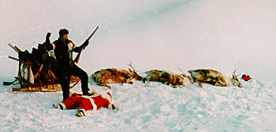

Les blagues irrespectueuses

|
"On peut rire de tout mais pas avec n'importe qui."
Pierre Desproges
|
Attention
Ces blagues ne sont absolument pas "politiquement
correctes" et insultent 100% de l'humanité (Belges, Arabes,
Noirs, Français, hommes, femmes, Américains, employés
de Microsoft...).
Passez impérativement
en mode "second degré" (et même troisième...).

(NB : La plupart des blagues de cette compilation proviennent
du forum fr.rec.humour
et d'autres sites Web, comme le
Web pour Rigoler)

Un Français et un Belge sont accoudés au bar dans
une bistrot frontalier. Ils sont bourrés comme jamais :
- "Hé-eeuuhh, le Belge ! Tu sais quelle différence y'a
entre un Belge et un miroir ?
- Nan, fait le Belge.
- Et bien le miroâr il réfléchit !"
Le Belge rit jaune et ils replongent dans leurs vapeurs. Cinq minutes
plus tard.. le Belge :
- "Hé, le fransquillon !
- Ouais ?
- Tu sais une fois quelle différence y'a entre un Français
et un miroir ?
- Tu rigooles ou quoi ! Je viens de te la raconter !!!
- Non non ! C'est une autre blague !
- Ah... alors, je ne sais pas.
- La différence c'est que le miroir, il est poli, lui ! "
Pourquoi les Belges n'utilisent pas de vizirette ?
- Parce qu'ils n'arrivent pas à mettre tout le linge dedans.
L'autre jour, je me baladais. En passant sur un pont, je vois un gars
sur le parapet, prêt à se lancer dans le vide. Immédiatement,
je me précipite auprès de lui, et je lui crie d'arrêter,
de ne pas sauter.
- "Et pourquoi ne devrais-je pas sauter ? me dit-il alors.
- Parce qu'il y a bien trop de formidables choses à vivre, et
tellement de gens intéressants avec qui vous avez des choses en
commun à rencontrer !
- Comme qui par exemple ?
- Eh bien, heu ... vous êtes croyant ou athée ?
- Croyant.
- Moi aussi ! Vous êtes chrétien ou juif ?
- Chrétien.
- Moi aussi ! Vous êtes catholique ou protestant ?
- Protestant
- Moi aussi ! Vous êtes Épiscopalien ou Baptiste
?
- Baptiste.
- Waow ! Moi aussi ! Vous êtes Baptiste Église
de Dieu ou Baptiste Église du Seigneur ?
- Baptiste Église de Dieu.
- Moi aussi ! Vous êtes Baptiste Église de Dieu
Originelle, ou bien Baptiste Église de Dieu Réformée
?
- Baptiste Église de Dieu Réformée.
- Moi aussi ! Vous êtes Baptiste Église de Dieu
Réformée, réforme de 1879, ou Baptiste Église
de Dieu Réformée, réforme de 1915 ?
- Baptiste Église de Dieu Réformée, réforme
de 1915 ! "
Alors c'est là que je lui ai dit :
- "Crève, espèce d'ordure hérétique !"
et je l'ai poussé dans le vide.
- Qu'est-ce qu'un Belge avec une mitraillette dans une menuiserie ?
- Un tueur en scierie.
C'est l'histoire de deux petites vieilles sur une route, à l'avant
d'une grosse voiture. Elles sont l'une et l'autre très petites de
taille, et elles peuvent à peine voir au dessus du tableau de bord.
À un certain moment, elles arrivent à une intersection
et elles grillent un feu rouge.
La vieille qui est assise sur le siège passager se dit :
- "Je dois perdre la tête: je jurerais qu'on vient de passer
au Rouge !"
Elle attend quelques minutes de plus et la voiture arrive à un
autre croisement. Là encore, le feu est rouge, et malgré
tout, la voiture passe sans même ralentir !
Cette fois, la mamie de droite est carrément angoissée
et elle se promet de bien observer la route.
Au croisement suivant, là encore, le feu est rouge cramoisi mais
la voiture passe comme si il était vert. Alors la vieille se tourne
vers sa copine à gauche et lui hurle :
- "Mais enfin Berthe! Ça fait trois feux rouges que tu grilles
à la file... Tu aurais pu nous tuer trois fois !"
Et Berthe répond :
- "Ah bon, c'est moi qui conduit ?!"
C'est samedi soir et c'est aussi le grand bal hebdomadaire dans un
petit village de la banlieue de Glasgow.
La soirée est animée et tout se passe bien, lorsque soudain
un type monte sur l'estrade, et, avant que le chanteur n'ait le temps de
réagir, il s'empare du micro pour dire d'un air affolé :
- "J'ai perdu mon portefeuille en dansant. J'offre dix livres sterling
à la personne qui me le ramènera. C'est un portefeuille en
cuir noir."
Dès que le gars a terminé, le joueur de cornemuse du
groupe attrape le micro et s'adresse à la salle :
- "J'offre 20 livres sterling ! "
- Vous savez pourquoi Dieu a inventé les financiers ?
- Pour que les météorologues aient l'impression de pratiquer
une science exacte.
Le juge à l'accusé :
- "Quelle est la première chose que vous a dite votre femme
ce matin là ?
- Elle m'a dit "Waow Robert, qu'est-ce que tu m'as mis cette nuit !
- Et pourquoi est-ce que ça vous a mis en colère au point
de lui taper sur la tête avec votre radio réveil ?
- Parce que mon prénom c'est Bernard, Monsieur le juge ! "
- Quelle est la différence entre les deux Bill (Clinton et Gates)
?
- Il y en a un qui passe sa journée à essayer de baiser
le maximum de gens et l'autre qui est Président des Etats-Unis.
Un économiste revient dans son ancienne université ,
et s'intéresse aux problèmes posés. Il s'aperçoit
que ce sont les mêmes qu'il y a 10 ans.
Il demande pourquoi au professeur :
- "Les questions sont toujours les mêmes, seules les réponses
changent, répond le prof."
Le Titanic commence à couler. Un Français se précipite
dans le premier canot de sauvetage venu. Un officier anglais le rappelle
à l'ordre :
- "Vous n'avez pas vu qu'il y avait des femmes sur ce bateau ?
- Si vous croyez que dans ces moments je ne pense qu'à baiser
!"
Combien faut-il de Belges pour faire une ambulance ? - Il en faut trois
:
* un qui fait le bruit du moteur "vvrrroouuummmm"
* un qui fait la sirene "wwoouuwwoouuwwoouuwwoouu"
* un qui fait le gyrophare "bleu ... bleu .... bleu ... "
- Quelle est la différence entre un militaire ?
- Il ne sait ni lire.
2 cyclistes français s'arrêtent à une station service
belge.
L'un dit à l'autre :
" Je vais te montrer comme ces Belges sont idiots !"
Il va vers le pompiste et demande :
"Dites-moi mon ami, voulez-vous faire le plein de mon vélo je
vous prie.
- Le plein du vélo ?
- Eh bien oui quoi, vous ne savez donc pas que les vélos fonctionnent
à l'essence ? Il suffit de dévisser la selle, de mettre de
l'essence et de revisser la selle.
- Bon d'accord", dit le Belge et il s'exécute.
"Bien mon ami, voulez-vous à présent vérifiez
le niveau d'huile ?
- L'huile ?
- Et bien oui, vous démontez le guidon...
- Bon d'accord...
- Très bien, voulez-vous maintenant vérifier la pression
des pneus ?" etc, etc, ........
Enfin :
-"Tout cela est parfait, combien vous dois-je ?"
A ce moment-là le Français se prend une claque monstrueuse
qui lui dévisse la tête.
-" Mais enfin, mais que vous prend-il ? Vous êtes fou ?
- Mais monsieur, je claque simplement la portière !"
- Pourquoi les femmes font-elles plus attention à soigner leur
apparence qu'à tenter de paraître plus intelligentes ?
- Parce que la plupart des hommes sont stupides, mais il y en a beaucoup
moins qui sont aveugles.
- Qu'est-ce qui est jaune et dans un arbre ?
- Une camionette de la Poste qui a raté son virage.
Quels sont les plus petits livres du monde ?
-
Les meilleures recettes de la cuisine anglaise.
Le Livret A roumain
Le catalogue des voyages de l'ex-Allemagne de
l'Est.
Ce que les hommes savent des femmes.
Les Avancées des Droits de l'Homme en Chine.
Les Différences entre Dilbert et la réalité.
Le Livre de la Vertu, par Bill Clinton.
Les avocats les plus intègres d'Amérique.
Opportunités de carrière pour dipômés
d'histoire.
Idées ethiopiennes pour dominer le monde.
Ce que les femmes savent des hommes.
Hospitalité française pour non-francophones.
L'annuaire téléphonique amish
Le Guide de la Mode pour Ingénieurs.
- Combien faut-il de programmeurs Micro$oft pour écrire correctement
une application ?
- Plus.
- Quelle différence y a-t-il entre un énarque et un TVG
?
- Un TGV quand ça déraille ça s'arréte.
Le médecin à son patient :
- "Hum... j'ai une bonne nouvelle, mais aussi une mauvaise nouvelle
pour vous...
- Alors commencez par la mauvaise ! lui répond le patient.
- Eh bien voilà, vous avez la maladie d'Alzheimer.
- Mon Dieu, c'est pas possible, c'est affreux ! Et quelle est la bonne
nouvelle ?
- Vous pouvez rentrer chez vous et ne plus y penser !"
Le PDG de Coca-Cola en audience à Rome demande au Saint-Père
:
- " Je vous offre 5 millions de dollars si dans votre prière
dominicale au monde, vous remplacez dans le Notre Père "Donne
nous notre pain quotidien" par "Notre Coca quotidien".
Le pape sourit et lui répond :
- "Vous savez bien que ce n'est pas possible ! "
Alors le PDG insiste et lui propose 50 Millions de $. Le pape réfléchit,
se tourne vers son secrétaire et demande :
- " Quand s'achève le contrat avec les boulangers ?"
- Qu'est-ce qu'on obtient si on croise des Témoins de Jéhovah
avec des adorateurs de Satan ?
- Quelqu'un qui fait du porte à porte pour dire aux gens d'aller
au Diable.
Un para Français, un G.I. amércain, et un commando Russe
se retrouvent sous la même tente au cours de manoeuvres militaires
de l'OTAN (c'était avant la guerre); la conversation s'oriente sur
la bouffe et les rations dont chacun des troufions dispose dans sa propre
armée :
- "Dans l'armée russe, nous avons 2000 calories par jour" dit
le Russe.
- "Eh bien nous, dans l'armée française, nous avons des
rations qui couvrent 4000 calories par jour."
- "Tout ça n'est rien !", continue l'Américain, "Chez
nous, les rations couvrent 6000 calories par jour !"
À ce moment là, le Russe s'énerve :
- "C'est vraiment n'importe quoi ce que vous dites : comment un homme
pourrait-il manger autant de choux ?!"
Le chauffage de l'église est subitement tombé en panne
en plein hiver, alors qu'il fait -20 dehors. Le chauffagiste qui
intervient sur la demande du curé, commence son travail en inspectant
les tuyauteries.
Au moment où il se trouve dans les combles de l'autel, il aperçoit
la vieille Mademoiselle Sylvestre -une pimbêche extrêmement
bigote- en train d'égrainer un rosaire.
Le chauffagiste est un parfait athée, doublé d'un joyeux
luron. Aussi, il profite de l'occasion pour faire une blague à la
vieille fille : en prenant sa voix la plus grave possible, il déclame
:
- "Ici Jésus Christ, fils de Dieu. Tes prières vont être
exaucées."
Mais la petite vieille ne bouge pas d'un poil et elle continue ses
prières.
Le chauffagiste recommence, un peu plus fort cette fois :
- "C'est Jésus Christ le fils de Dieu qui te parle ! Je vais
exaucer tes prières !!"
Mais, encore une fois, la vieille ne bouge pas d'un cil. Alors en criant
carrément, le gars recommence :
- "ICI JÉSUS CHRIST, LE FILS DE DIEU! JE VAIS EXAUCER TES PRIÈRES
!"
Alors la vieille regarde le crucifix et crie :
- "TU VAS BIENTÔT TE TAIRE, OUI ?! C'EST À TA MÈRE
QUE JE PARLE !!!"
Un archéologue qui faisait des fouilles dans le désert
du Negev en Israël fit un jour une découverte extraordinaire.
À l'intérieur d'un caveau, il découvrit une sorte
de sarcophage contenant un corps momifié.
Aussitôt, l'archéologue examine la momie avec tous les
moyens dont il dispose, puis il appelle le conservateur du musée
de Jérusalem :
-"Je viens de découvrir une momie vieille de 3000 ans. Il s'agit
d'un jeune homme qui est mort d'une crise cardiaque !"
Le conservateur du musée est enthousiaste :
- "C'est exceptionnel. Il faut vite amener la momie ici pour qu'on
vérifie tout ça !"
Une semaine plus tard, la momie arrive dans le laboratoire du musée.
Le conservateur et une équipe de scientifiques procèdent
à leurs propres examens, puis, au bout de trois mois, le conservateur
appelle l'archéologue pour lui donner le résultat :
- "Vous aviez tout à fait raison pour l'âge de la momie,
ainsi que pour la cause de la mort. C'est incroyable, comment avez-vous
fait pour deviner tout ça ?
- Facile. Le corps momifié tenait un bout de papier dans sa
main où il était écrit: '10 000 Shekels sur Goliath'."
Vous avez deux vaches...
-
Féodalisme : Vous avez deux
vaches, votre seigneur vous prend une partie du lait.
-
Esclavagisme : Vous avez deux
vaches ; un marchand d'esclave vous vend et vous devez les traire pour
votre nouveau patron.
-
Socialisme pur : Vous avez deux
vaches, on vous les prend, on les met dans un grand troupeau communautaire
dont tout le monde doit prendre soin. Vous recevez autant de lait que nécessaire.
-
Socialisme bureaucratique : Vous
avez deux vaches, on vous les prend, on les met dans un grand troupeau
communautaire géré par d'anciens éleveurs de poulets.
Vous devez vous occuper des moutons des bergers qui à présent
s'occupent des poulets. Vous recevez autant de lait et d'oeufs dont le
Plan décrète que vous avez besoin.
-
Fascisme : Vous avez deux vaches
; le gouvernement prend les deux, vous embauche pour en prendre soin, et
vous vend le lait.
-
Communisme pur : Vous avez deux
vaches ; vos voisins vous aident à en prendre soin et vouspartagez
le lait.
-
Communisme soviétique : Vous
avez deux vaches ; le gouvernement vous les prend, mais vous devez toujours
vous en occuper ; il vous prend tout le lait.
-
Communisme cambodgien : Vous
avez deux vaches ; le gouvernement les prend et vous abat.
-
Dictature : Vous avez deux vaches
; le gouvernement les prend et vous disparaissez.
-
Démocratie pure : Vous
avez deux vaches ; vous décidez en commun qui reçoit le lait.
-
Démocratie représentative
:Vous avez deux vaches ; vos voisins élisent quelqu'un
qui décidera de qui recevra le lait.
-
Bureaucratie : Vous avez deux
vaches ; le gouvernement décrète d'abord comment vous devez
les nourrir et les traire. Puis il vous offre des primes pour ne plus les
traire.
Puis il en réquisitionne une, l'abat, trait l'autre et balance le
lait dans la rivière. Puis il vous demande de remplir vingt pages
de formulaires au sujet de la vache manquante.
-
Néolibéralisme : Vous
avez deux vaches ; après avoir fait faillite faute de fonds, vous
devez les vendre pour trois fois rien à un grand groupe qui vous
vend le lait avec 50% de marge.
-
Anarchie pure : Vous avez deux
vaches ; soit vous vendez le lait à un prix honnête, soit
vos voisins viendront vous le voler.
-
Anarcho-capitalisme : Vous avez
deux vaches ; vous en vendez une et achetez un taureau.
-
J'en-foutisme : Vous avez deux
vaches ; elles crèvent pendant que vous surfez sur Internet et faites
la fête avec les copains.
-
Surréalisme : Vous avez
deux girafes ; le gouvernement vous ordonne de prendre des leçons
d'harmonica.
C'est un fermier qui découvre un beau jour que l'une de ses
poules ne pond plus que des oeufs carrés. Décidant d'exploiter
cette anomalie spectaculaire, il prévient l'INRA de son cas, lequel
vivement intéressé, prend la poule en pension contre une
bonne compensation financière.
Le problème, c'est qu'une fois installée a l'INRA, la
poule recommence à pondre des oeufs ovales. Convoqué pour
constater le fait, le fermier va voir sa poule et lui demande ce qui ne
va pas. Laquelle lui répond alors :
-"Et alors... tu crois que j'vas continuer à m'casser l'cul,
maint'nant qu'j'suis fonctionnaire?"
- Quelle différence y a t'il entre un américain
et un yaourt ?
- Au bout d'un certain temps, le yaourt développe une certaine
forme de culture.
- Quelle est la différence entre un Américain mangeant
du chewing-gum et une vache qui rumine ?
- Il y a une lueur d'intelligence dans l'oeil de la vache.
C'est la femme du rabbin Metzenbaum qui appelle son neveu,
le psychiatre :
- "Dis-donc, j'ai un conseil à te demander : ton oncle se prend
pour le nouveau Moïse. Qu'est-ce que tu penses de ça ?"
Le psy la rassure :
- " Ne t'inquiète pas, ma tante. Il a certainement la folie
des grandeurs, c'est une petite lubie passagère.
- Ouf, tu me rassures. Mais dis-moi tout de même, comment je
peux l'empêcher de séparer les eaux dans la baignoire à
chaque fois qu'il prend son bain ?"
L'histoire la plus courte (un seul caractère) :
Titre de l'histoire : Résultat du concours d'admission
de la race terrienne à la Fédération des Peuples Galactiques.
Texte de l'histoire : 0.
- Qu'est-ce qui est noir, qui vole et qui est très très
dangereux ?
- Une bonne soeur en panne de kérosène.
Le 1er jour, Dieu créa le soleil - alors Lucifer créa
les coups de soleil
Le 2ème jour, Dieu créa le sexe - alors Lucifer
créa le mariage.
Le 3ème jour, Dieu créa un économiste.
Là, c'était dur pour Lucifer, mais après réflexion,
il créa un 2ème économiste.
C'est un gars qui rentre dans un café et qui dit :
- " Moi, j'ai 150 de QI ! "
Un autre lui répond :
- " Moi j'ai 149 !"
Alors ils vont s'asseoir dans un coin et parlent de fission nucléaire,
big bang, etc.
Un autre gars arrive :
- " Moi, j'ai 110 de QI."
Quelqu'un se lève dans la salle et dit :
- " Moi, j'en ai 105. "
Alors ils se mettent a une table et parlent de littérature,
d'histoire...
Enfin, un troisième entre et crie :
- " Moi, j'ai 2 de QI ! "
Un autre :
- " Ben moi aussi !!"
Alors ils s'attablent et le premier dit à l'autre :
- " Alors comme ça, toi aussi tu es au Front National ?!"
- Quelle est la différence entre un galet sur une plage et un
routier ?
- Le galet plus il roule, plus il est poli.
Un vieil homme qui se baladait sur la plague se prend les pieds dans
un truc métallique. En dégageant l'objet du sable et en le
nettoyant, il se rend compte qu'il s'agit d'une lampe magique de laquelle
sort un génie.
Le génie lui demande si il a un voeu à exaucer. Le vieil
homme lui dit :
-"Plutôt que d'exaucer un voeu, est-ce qu'il est possible de
lever une malédiction qui me frappe depuis 40 ans ?
- Oh oui, pas de problème, répond le génie, mais
il faut me donner la phrase exacte qui a mis le sort en place."
Sans hésiter, le vieux répond :
- "Je vous déclare maintenant mari et femme".
- " Tu te maries avec moi parce que j'ai hérité de cent
briques de ma grande mère, hein, c'est ça ?
- Faux : je m'en fous complètement de savoir de qui tu as hérité.
"
(Ce qui est bien avec celle-là, c'est qu'elle marche
avec les deux sexes dans les deux sens).
Au zoo d'Anvers des animaux discutent des prochaines vacances :
"Dis-moi la girafe, où tu vas en vacances ?
- Et bien, j'ai un grand cou, ma femme a un grand cou et mes enfants
aussi ! Et comme on aime pas se faire remarquer, on va Afrique, là
ou il y a des femmes girafes.
- Et toi le Gorille, où tu vas ?
- Et bien, je suis tout noir, ma femme est toute noire, mes enfants
aussi. Et comme on aime pas se faire remarquer... On va au Rwanda.
- Et toi le Crocodile, où tu vas ?
- Et bien moi , j'ai une grande gueule, ma femme a une grande gueule,
mes enfants aussi ont une grande gueule, Et comme on aime pas se faire
remarquer, on va en France."
Un PDG téléphone à un PDG concurrent :
- "Je m'apprête à engager votre ancien chauffeur.
Peut-on avoir confiance en lui ?
- Voyons, je lui ai confié cent fois ma vie, sur les routes
les plus dangereuses...
- Oui, mais peut-on lui confier quelque chose de valeur ? "
Au ciel, St-Pierre étant malade, un séraphin de
second niveau assume le travail de St-Pierre et reçoit les morts
aux portes du Paradis. Arrive un jour un ingénieur qui n'a pas vécu
de facon très très catholique. L'ange examine son dossier
et l'expédie direct en enfer.
Le diable, tout heureux d'avoir un ingénieur parmi ses
clients lui fait la fête. Il explique aussi ses problèmes
à l'ingénieur.
- " Il fait chaud en maudit ici. Si tu pouvais...
- Pas de problème, je vais vous arranger ça."
L'ingénieur se met à faire des plans et deux semaines
plus tard, l'enfer est climatisé !
Le diable amène deux ou trois autres problèmes
du même genre que l'ingénieur règle aussitôt.
C'est enfin devenu vivable, l'Enfer.
Pendant ce temps, au Paradis, St-Pierre revient de maladie et
apprend l'hallucinante bévue, la gaffe monstrueuse, la bourde apocalyptique
et blasphématoire de son suppléant...
- " Qu'as tu fait là, bordel de Lui ! Jamais, jamais !!! jamais
il ne faut envoyer d'ingénieur en Enfer ! "
St-Pierre file en parler à Jésus qui décide
d'intervenir lui-même.
- " Lucifer, sermonne-t-il le diable, tu dois me rendre l'ingénieur,
c'est une erreur administrative et tu dois me l'envoyer au Paradis.
- Au grand jamais ! vocifère Lucifer. Tout s'est fait dans les
règles ! Il m'est indispensable. Je l'ai et je le garde ! Tu n'as
qu'à employer du personnel compétent. Le jour où tu
choisiras tes saints sur leur compétence et non sur leur foi, tes
anges feront moins de gaffes !
- En pénitence de ma part, si tu veux, tu auras droit automatiquement
au prochain arrivage de condamnés à mort américains
!
- Ah non, j'en ai marre des guerres entre gangs. Tu les gardes !
- Et à tous les musulmans lors de la prochaine guerre en Bosnie
ou Israël.
- Ttttt. Ton adjoint en bas fait dans l'oecuménique, tu assumes
ou tu le rappelles ! D'ailleurs, ils ne s'entendraient pas avec mes Serbes.
- Je vais te faire un procès ! de répliquer Jésus,
à bout de nerfs.
- Ah oui ? répond Lucifer, un sourire sardonique aux lèvres.
Et où prendras-tu tes avocats ?"
- Quelle est la différence entre un mur et un agent de
police ?
- Essaye de pisser sur un agent de police...
Moïse demande à Dieu :
- " Pour vous, Seigneur, que représentent dix millions d'années
?
- Pour moi c'est une seconde."
Moïse un peu excité reprend :
- " Et dix millions de dollars ?
- Et bien, un dollar !"
Le type de plus en plus excité :
- "Dans ces conditions, Seigneur, pourriez vous me faire l'aumône
de dix millions de dollars?
- Pas de problème... juste une seconde ! "
- Quand est-ce qu'une personne décide de devenir un comptable
?
- Quand elle réalise qu'elle n'a pas le charisme pour réussir
comme croque-morts.
C'est un homme qui rentre chez lui et dit a sa femme :
- "Chérie, prépare tes affaires, je viens de gagner soixante
briques au loto !"
Et la femme toute excitée :
- "Chouette !! Mes affaires d'été ou d'hiver ?
- Toutes tes affaires , tu te casses !"
- Qu'est-ce qui manque lorsque vous êtes devant un sale mâle
misogyne dans le ciment jusqu'au cou ?
- Du ciment.
C'est l'histoire d'un curé et d'un chauffeur de bus qui
se retrouvent devant St. Pierre. Le curé est irréprochable
alors que le chauffeur roulait si mal qu'il a causé un nombre incalculable
d'accidents. St. Pierre envoie le chauffeur tout de suite au paradis mais
refuse le curé.
Le curé proteste :
-"Voici un très mauvais conducteur qui n'est même pas
chrétien. Moi, homme de Dieu, à son service pendant toute
ma vie, je n'ai pas le droit au paradis alors qu'un chauffard y a droit.
C'est pas juste !"
St. Pierre répond :
-"Pendant que vous faisiez une messe tout le monde dormait. Alors que
le chauffeur conduisait si mal que tout le monde priait. "
- Qu'est-ce qui a mille jambes, plein de boutons sur la gueule
et qui arrête pas de gueuler ?
- Le premier rang d'un concert de Patrick Bruel.
- Quelle est la différence entre un milliardaire et un
SDF ?
- Le milliardaire change de Rolls tous les ans et le SDF change de
porche tous les soirs.
Dugenou fait son service dans un régiment d'infanterie.
Sa soeur vient de mourir dans un accident de voiture, mais il ne le sait
pas encore. Son colonel l'apprend via la brigade de gendarmerie et fait
appeler l'adjudant :
- " Adjudant Lafleur ! A vos ordres mon colonel !
- Oui, dites-moi, Lafleur, la soeur de Dugenou est décédée
ce matin. Un accident de voiture. Je vous ai fait appeler pour que vous
lui annonciez la nouvelle avec tact. Dugenou est un garçon sensible,
et vous saurez le ménager.
- Bien mon colonel ! "
Lafleur sort du bureau du Colonel et fait sonner le rassemblement.
Une fois devant la compagnie rassemblée, il vocifère :
- " Les ceusses dont la soeur est morte, un pas en avant !"
Personne ne bouge.
- " Dugenou ! Vous m'frez quinze jours de trou pour non obéissance
aux ordres ! "
Cette histoire se passe dans un bar.
Il y a là quelques hommes qui passent le temps en buvant de
la bière et en racontant des blagues, chacun à son tour.
Mais un homme ne dit rien, il écoute les blagues sans rien dire.
Après un bout de temps, le barman se tourne vers lui et lui
dit :
- "Et vous ? Vous n'avez raconté aucune blague."
L'homme, les yeux baissés :
- "Voyez-vous, je ne sait qu'une blague et...et c'est... une blague
belge.
- Et alors ? dit le barman, moi, je suis belge, et les deux hommes
à vos côtés sont belge aussi, mais ça ne nous
gêne pas, vous pensez bien qu'avec les Français on a l'habitude.
Dites-nous votre blague.
- Mais non," répond l'homme, "je ne peux pas...
- Mais si mais si !
- Non, non... je ne veux pas.
- Vraiment ! Ne vous inquiétez pas, les blagues belge ne nous
gênent pas.
- Oh, ce n'est pas ça, dit l'homme, c'est juste que je ne veux
pas être obligé de l'expliquer trois fois !"
Dans ce bar, le barman est réputé avoir une poigne terrible.
À tel point qu'un concours permanent est ouvert dont le prix est
quand même de 1000 francs.
Le concours consiste en ceci : Le barman presse dans sa main un citron
en faisant couler le jus dans un verre. Si quelqu'un est capable de faire
donner une goutte de plus au citron après le barman, alors il gagne
les 1000 francs !
Tout le monde des gros bras (les forts des halles, les dockers et autres
haltérophiles) s'est essayé à ce petit jeu, mais personne
n'a encore gagné.
Un beau jour, un petit bonhomme, tout mince, tout fragile, avec des
lunettes aux verres épais d'un centimètre se présente
au barman et lui dit :
- "J'aimerai tenter ma chance au concours !"
Après que les rires se soient tus, le barman dit "d'accord",
il attrape un citron et le presse complètement. Ensuite, il tend
les restes du citron au petit bonhomme.
La foule qui regarde la scène pousse un "Ohhh" d'étonnement
lorsqu'elle voit une puis deux puis trois puis... six gouttes tomber du
citron pourtant sec !!!
Après que la foule l'ait acclamé comme il se doit, le
barman sort 1000 francs de sa caisse et demande au petit bonhomme :
- "Et qu'est-ce que vous faites comme métier ? Bûcheron
ou quelque chose comme ça ?"
Et le petit bonhomme répond :
- "Non, non... Je suis contrôleur aux impôts."
C'est le Diable qui dit à un avocat pour le tenter :
- "Je vais prendre les âmes de ta femme et de tes trois enfants.
Elles passeront l'éternité avec moi en Enfer. En échange,
tu seras le plus grand avocat du monde et tous les ans tu gagneras plus
d'argent que Bill Gates et le Sultan de Brunei réunis !"
Et l'avocat lui répond :
- "Ca a l'air bien, mais, où est le piège ?"
C'est l'histoire d'un patron qui, pour recruter sa secrétaire
décide de poser la même question à trois candidates
:
- "Que faites vous si vous trouvez un billet de 500 F par terre ?"
La première dit :
- "Je mets une affiche à la cafétéria et je fais
le tour de mes collègues pour retrouver celle ou celui qui l'a perdu."
La deuxième est plus franche :
- "Je le mets dans mon tiroir. Si au bout d'un an personne ne le demande,
je le garde."
La dernière a une solution simple : elle donne immédiatement
le billet au responsable de la sécurité.
A votre avis, laquelle sera embauchée ?
Réponse : Celle qui a le plus beau décolleté.
Un jeune homme est mort et arrive devant les portes du Paradis.
St-Pierre fouille dans le Grand Livre pendant un bon quart d'heure, et
dit en soupirant au jeune homme :
- " Apparemment, jeune homme, vous n'êtes pas signalé
comme ayant fait quoi que ce soit de vraiment bien. Mais comme vous n'avez
pas fait grand mal à quiconque non plus, si vous me dites une seule
grande bonne action que vous avez faite dans votre vie, je vous laisserai
entrer au Paradis.
- Et bien... Il y a eu une fois, alors que je roulais sur une autoroute,
j'ai vu un groupe de motards, je saurais pas vous dire le gang, qui étaient
en train d'assaillir une pauvre jeune fille. J'ai ralenti, et je me suis
arrêté à leur hauteur. Ils étaient bien cinquante.
N'écoutant que mon courage, je descend de la voiture, je prend la
manivelle dans le coffre, je file droit vers le chef du gang, et je lui
hurle de lâcher la fille. A ce moment, ils ont fait un cercle autour
de moi. Je me suis jeté sur le chef, je lui ai arraché sa
chaîne en or et lui ai balancé ma manivelle dans la gueule.
- Vraiment ? dit St-Pierre impressionné. C'était quand,
cet exploit ?
- Il y a un quart d'heure..."
- Qu'est-ce qu'on obtient si on demande à Bill Clinton de dire
"La vérité, toute la vérité, rien que la vérité"
?
- Trois réponses différentes.
Dans ce bar, le barman est réputé avoir une poigne terrible.
À tel point qu'un concours permanent est ouvert dont le prix est
quand même de 1000 francs. Le concours consiste en ceci : Le
barman presse dans sa main un citron en faisant couler le jus dans un verre.
Si quelqu'un est capable de faire donner une goutte de plus au citron après
le barman, alors il gagne les 1000 francs !
Tout le monde des gros bras (les forts des halles, les dockers et autres
haltérophiles) s'est essayé à ce petit jeu, mais personne
n'a
encore gagné.
Un beau jour, un petit bonhomme, tout mince, tout fragile, avec des
lunettes aux verres épais d'un centimètre se présente
au barman et lui dit :
- "J'aimerai tenter ma chance au concours !"
Après que les rires se soient tus, le barman dit "d'accord",
il attrape un citron et le presse complètement. Ensuite, il tend
les
restes du citron au petit bonhomme.
La foule qui regarde la scène pousse un "Ohhh" d'étonnement
lorsqu'elle voit une puis deux puis trois puis... six gouttes tomber
du citron pourtant sec!!! Après que la foule l'ait acclamé
comme il se doit, le barman sort 1000 francs de sa caisse et demande au
petit bonhomme :
- "Et qu'est-ce que vous faites comme métier ? Bûcheron
ou quelque chose comme ça ?"
Et le petit bonhomme répond :
- "Non, non... Je suis contrôleur aux impôts."
C'est le premier jour de la rentrée des classes. Le prof s'adresse
aux élèves :
- "Vous allez me donner votre prénom, et me dire ce que votre
papa fait comme métier. A toi !
- Je m'appelle Solange, et mon papa est cuisinier.
- Moi, c'est Didier, et mon papa est facteur.
- Moi c'est Roland, et mon papa, il est strip-teaseur dans une boîte
de pédés..."
Stupeur dans la classe ! Mais, la maîtresse passe rapidement
à un autre sujet. Evidemment, à la récréation,
Roland n'arrête pas de se faire chambrer, et un de ses copains lui
demande :
- "C'est vraiment la vérité vraie ? Ton papa se fout
à poil devant les pédés ?
- Non, il bosse chez Microsoft, mais j'avais trop honte de le dire..."
- Qu'est-ce qui a 150 dents et deux yeux ?
- Un alligator.
- Et qu'est-ce qui a 150 yeux et deux dents ?
- Un car de personne agées.
- Combien faut-il d'hommes pour cirer un parquet de 200 m²
?
- Aucun, c'est un boulot de femme.
Un jour le Bon Dieu convoque, Bill Clinton, Boris Eltsine et Bill
Gates et leur dit :
-" Je suis fatigué de vous autres humains ; dans une semaine
je fais sauter cette terre que vous aimez tellement détruire."
Bill Clinton réunit son gouvernement :
-"J'ai une mauvaise nouvelle et une bonne nouvelle :
La bonne c'est que le Bon Dieu existe et la deuxième c'est que
la fin du monde est dans une semaine. "
Même chose pour Boris Eltsine.
Pour Bill Gates : il réunit son conseil d'administration.
- " J'ai deux bonnes nouvelles à vous communiquer :
La première, c'est que Dieu existe et qu'il me place avec les
grands de ce monde.
Et la deuxième: C'est que nous n'aurons pas à débugger
Internet Explorer 4.0. "
L'avocat :
- "Sur les lieux de l'accident, n'avez-vous pas dit au policier que
"vous ne vous étiez jamais senti aussi bien de toute votre vie?"
Le fermier :
- " C'est exact "
L'avocat :
- " Et c'est maintenant seulement que vous venez vous plaindre d'avoir
été
sérieusement blessé dans l'accident entre la voiture de mon
client et votre carriole !? "
Le fermier :
- " C'est parce que, lorsque le policier est arrivé sur le lieu
de l'accident, il est allé voir mon cheval, qui avait une patte
cassée, et il l'a descendu d'une balle dans la tête. Ensuite,
il est allé vers Rouky, mon chien qui était couché
sur la route et qui se vidait de son sang, et il l'a achevé lui
aussi. Alors quand ensuite il s'est approché de moi et m'a demandé
comment je me sentais, j'ai pensé qu'il valait mieux lui dire que
j'allais parfaitement bien."
- Qu'est-ce que c'est qu'un Noir dans un tribunal américain
?
- Un coupable.
- Comment appelle-t-on un bouton sur la fesse d'un homme ?
- Une tumeur au cerveau.
La conception de la vie selon les différentes religions
:
Taoïsme : il arrive qu'il y ait des ennuis.
Hindouisme : ces ennuis se sont déjà produits
auparavent.
Islam : s'il t'arrive des ennuis, prends un otage.
Athéisme : pas d'ennuis.
Bouddhisme : quand des ennuis t'arrivent, s'agit-il vraiment
d'ennuis ?
Catholicisme : si j'ai des ennuis, c'est que je les ai mérités.
Témoins de Jéhovah : toc, toc, voilà les
ennuis.
- Quelles sont les mensurations idéales d'une femme ?
- 90-50-41 : 90 ans, 50 millions en banque et 41 de fièvre.
Un savant génial a inventé une machine qui augmente
automatiquement l'intelligence d'un être humain. Un volontaire accepte
de la tester. Il s'assied dans la machine et met le casque. Sur un compteur,
son QI s'affiche : 101... 110... 125...150...200...320...750. C'est fini,
il remercie le professeur et s'en va.
Deux mois plus tard le volontaire revient. Sa vie est devenue un enfer,
il trouve tout le monde stupide, y compris son ex-femme, il a déjà
reussi tous les examens possibles, et veut revenir à son ancien
QI banal de 100. Le savant accepte et relance la machine. L'aiguille indique
: 750... 333...220...102... Et soudain la mécanique s'emballe :
75...50...10...2. Et elle s'arrête.
"Catastrophe ! se lamente le savant, je viens de le ramener à
un QI de 2 !!"
Le volontaire ressort, apparemment pas plus touché que ça,
tourne autour de la machine trois fois et demande au savant :
- "Vous avez les papiers du véhicule ?"
- Pourquoi les Gipsy Kings tiennent-ils leur guitare à
la verticale quand ils jouent ?
- Essayez de répéter à douze dans une caravane,
pour voir !
Ca y est, enfin, la troisième guerre mondiale a éclaté.
Les militaires d'une armée, à la point du progrès,
ont une botte secrète : un ordinateur surpuissant qui peut résoudre
un problème tactique particulièrement ardu. Un jour où
la bataille semble perdue, ils lui font ingurgiter les données,
et ils posent la question fatidique :
- "Faut-il attaquer ou sonner la retraite ?"
L'ordinateur émet quelques cliquetis, une série de bips,
ses diodes se mettent à clignoter et soudain, la réponse
jaillit :
- "OUI."
Les généraux se regardent, perplexes.
L'un d'eux décide d'agir : il s'approche du clavier et tape
une autre question :
- "Oui quoi ?"
L'ordinateur répond, instantanément :
- "OUI MON GÉNÉRAL !"
- Quel animal prend cinq cent kilos dans la nuit ?
- La femme, car le soir c'est : "Bonne nuit ma puce"...
...et le matin au réveil, c'est : "Lève toi grosse vache
!".
Une femme a besoin d'être deux fois plus efficace qu'un
homme pour qu'on la croit moitié aussi bonne.
Heureusement ce n'est pas difficile.
- Qu'est-ce qui pèse 500 livres le matin, 200 livres le
midi, et 10 livres le soir ?
- Le mari. Le matin, c'est : "Lève-toi mon gros !" ,
le midi, "Viens manger mon cochon !",
et le soir : "Viens t'coucher mon lapin ! "
C'est un monsieur qui sort d'un hypermarché et qui voit
un clodo en train de brouter de l'herbe. Aussi ce monsieur, désireux
de faire une bonne action lui propose de venir manger chez lui.
Heureux, le vagabond lui demande s'il peut venir avec sa femme et ses
cinq enfants.
-" Mais il n'y a pas de problème, répond le monsieur,
j'ai au moins deux cent mètres carrés d'herbe chez moi ..."
Deux maris discutent :
- "Ma belle-mère est un ange !
- T'as de la chance, la mienne est encore en vie."
-" Monsieur le Juge, ma femme est ridicule ! La plupart des femmes
adoreraient avoir un mari qui leur ouvre la porte par galanterie !
- Le divorce est accordé, répond le Juge : je ne pense
pas que vous étiez motivé par la galanterie, à 60
km/heure !"
Lettre à sa mère d'un jeune du Yorkshire exilé
à Londres :
" Chère Ma,
J'ai trouvé du boulot au crématorium. C'est super, je
brûle des juifs et des pakistanais toute la journée et on
me paie pour ça."
- Qu'est-ce qui est blanc, qu'on trouve en hiver et qui se termine
par "AR"?
- De la neige, connard !
Trois curés sont ensemble à la pêche. Pour
parler, l'un d'eux dit :
- " Puisque nous sommes seuls ici avec Dieu, nous pouvons peut-être
nous raconter nos plus grands péchés. Cela nous soulagerait
et nous permettrait peut-être de surmonter nos fautes."
Les deux autres sont d'accord, et l'un commence :
- " Je suis alcolique. Chaque dimanche, j'attends avec impatience la
fin du prêche pour aller boire ma bouteille de whisky."
Le deuxième :
- " J'aime les femmes. Chaque dimanche, j'attends avec impatience la
fin de la messe pour aller draguer une jeunesse au bar."
Le troisième, celui qui avait proposé la confession :
- " J'adore les ragots. Et ce dimanche, j'attends avec impatience qu'on
rentre en ville..."
- Comment appelle-t-on un homme qui a perdu son intelligence ?
- Un veuf.
Un curé et une nonne font une partie de golf. Au premier
trou, le curé rate complètement son tir.
- " Nom de Dieu ! crie-t-il.
- Mon père ! Vous ne devriez pas utiliser ce langage, dit la
nonne, choquée.
- Vous avez raison, excusez-moi, je me suis emporté."
Deuxième trou. Deuxième coup raté en beauté.
- " Nom de Dieu ! Encore raté ! s'exclame le curé.
- Mon père ! Si vous continuez à user de ce langage,
le Seigneur vous punira ! lui reproche la nonne, outrée.
- C'est vrai, toutes mes excuses."
Troisième trou, nouvel échec.
- " Bordel de nom de Dieu ! " hurle le curé en rage.
... Et soudain la lumière baisse, le ciel se couvre de nuage,
et un éclair unique fond depuis le ciel et foudroie... la nonne.
Et une grande et profonde voix retentit :
- " Nom de Dieu, encore raté ! "
- Pourquoi faut-il enterrer les français sur le ventre ?
- Si on les enterre sur le dos, on aura jamais assez de terre pour
remplir leur grande gueule.
- Une petite unité de temps ?
La milliseconde
- Une petite unité de longueur ?
Le millimètre
- Une petite unité de poids ?
Le milligramme
- Une petite unité d'intelligence ?
Le militaire !
On dit que Christophe Colomb était un économiste
:
* Quand il est parti, il ne savait pas où il allait.
* Quand il est arrivé, il ne savait pas où il était.
* Et tout ça était financé par le gouvernement.
A l'époque à laquelle les humains étaient
dans le jardin d'Éden, Adam va voir Dieu pour lui poser quelques
questions qui le remuaient depuis longtemps :
- " Dieu, est ce que je peux te poser une question?
- Oui, bien sûr Adam. Vas-y !
- Dieu, j'aimerais bien savoir pourquoi tu as fait Éve aussi
belle, aussi désirable ?
- Ben, c'est facile Adam : pour que tu puisses l'aimer !
- Ah oui ? Alors, pourquoi l'as tu faite aussi stupide ?
- Facile : pour qu'elle puisse t'aimer ! "
- Qu'est-ce qu'il y a au dessus des montagnes et qui finit par
"ir"???"
- De la neige, connard, je viens de te le dire !!!
Un mendiant fait la manche :
- " S'il vous plaît, une p'tite pièce pour manger."
Un petit garçon s'approche et lui dit :
- " Mais, monsieur, une pièce ... Ca se mange pas !
Un ingénieur, un médecin et un curé jouent
ensemble au golf. Arrivé au troisième trou, ils sont bloqués
par un groupe de joueurs qui savent à peine se servir d'un club,
et envoient les balles n'importe où.
- " Seigneur, ces gens sont vraiment nuls. Ils ralentissent tout le
monde, dit le médecin.
- Voici le responsable du golf, dit le curé, demandons-lui qui
ils sont."
Le responsable leur répond :
- " Soyez indulgents, ce sont des anciens pompiers aveugles. Ils ont
perdu la vue en combattant le feu dans la maison du club de golf, alors
on les laisse jouer gratuitement depuis.
- C'est très triste pour eux, dit le curé, il faudra
que je pense à eux dans ma prière de ce soir.
- Et moi, dit le médecin, je contacterai mes amis ophtalmogolistes
pour savoir si on peut les guérir d'une manière ou d'une
autre."
Et l'ingénieur, après un instant de réflexion
:
- " Mais ne pourraient-ils pas jouer la nuit ?"
- Qu'est-ce qu'un homme intelligent aux États-Unis ?
- Un touriste.
Un autobus emmène des politiciens à un congrès.
L'autobus quitte la route et s'écrase contre un arbre dans le pré
d'un vieil agriculteur. Le vieil agriculteur, après avoir vu ce
qui s'était passé, se rend sur les lieux de l'accident. Il
creuse un trou, enterre les politiciens. Quelques jours après, un
fourgon de gendarmerie passe sur la route et voit l'autobus écrasé.
L'un des gendarmes demande à l'agriculteur où sont passés
tous les politiciens. Le vieil agriculteur lui dit qu'il les a tous enterrés.
Le gendarme demande alors :
- "Etaient-ils TOUS morts ?"
Le vieil agriculteur répond :
- "Ben, certains parmi eux disaient qu'ils n'étaient pas morts,
mais vous savez comment sont les politiciens..."
- Savez-vous pourquoi il n'y a pas de femme au paradis ?
- Parce que ce serait l'enfer !
Un Belge ayant vécu toute sa vie à Bruxelles en
a soudain assez de la vie de citadin. Il décide de déménager
pour la campagne, et de devenir éleveur de poulets. Dans les environs
de Charleroi, il trouve une jolie fermette à vendre pour pas trop
cher. Il saute sur l'occasion et l'achète. Quelques jours plus tard,
il reçoit la visite de son voisin immédiat, qui est, lui
aussi éleveur de poulet. Le voisin lui dit :
- " Elever des poulets, de nos jours, ce n'est pas une mince affaire.
Par solidarité, je vais te prêter mille poulets pour t'aider
à démarrer. Tu me les rendras quand t'auras assez de sous
devant toi. "
Après l'avoir chaleureusment remercié, l'apprenti aviculteur
rentre chez lui avec les poulets.
Deux semaines plus tard, le voisin vient voir à quel stade en
sont ses poulets. Le nouveau lui dit :
- "Oh, c'est pas terrible : tous les poulets sont morts ! "
Le voisin n'y croit pas :
- "Je n'ai jamais eu autant de perte sur mes poulets. Ils ont dû
avoir un coup de chaleur. Allez, je vais t'en prêter mille autres."
Deux nouvelles semaines passent. Le voisin affable vient à nouveau
aux nouvelles :
- "Je ne sais pas si je dois te le dire, mais tes mille poulets sont
morts encore une fois. Il n'en reste plus un seul de vivant..."
Le voisin incrédule demande :
- "Mais qu'est-ce qui s'est passé ? Comment tu expliques qu'ils
soient tous morts ? "
Et l'autre répond :
- "Ben je ne suis pas encore sûr... Ou bien c'est parce que je
les plante trop profond, ou bien c'est parce que je les plante trop serrés."
- Quelle est la différence entre une femme et une petite
amie ?
- 20 kg
Sur un green de golf, ça fait déjà cinq minutes
qu'un gars est en position de swinguer, regardant au loin, puis regardant
sa balle, mesurant la distance du regard, essayant de calculer la vitesse
et la direction du vent. Forcément, ses partenaires de jeu s'énervent:
-"Mais bon sang! Qu'est-ce que tu attends pour te décider ? Tu vas
la frapper cette sacrée balle ?!"
Le gars répond :
- "Ma femme est là-bas en train de m'observer depuis le club-house.
Je veux que mon tir soit parfait!"
-"Eh bien si tu veux mon avis, tu n'as pas la moindre petite chance
de la frapper avec ta balle en tirant d'ici !"
Une infirmière qui prend sa pause cigarette à l'entrée
de l'hôpital voit deux médecins en blouse blanche, en train
de chercher quelque chose dans le parterre de fleurs.
- "Excusez-moi" dit-elle, "vous avez perdu quelque chose ?"
- "Non, répond un des docteurs, tout à l'heure on fait
une transplantation cardiaque à un inspecteur des impôts,
et on est à la recherche d'une pierre de taille adéquate."
Deux copines prennent un café en discutant. La première
remarque que l'autre est toute bizarre.
Elle lui demande :
-"Quelque chose te préoccupe on dirait ? Tu as l'air anxieuse..."
La seconde répond :
- " Si tu savais ! Mon mari vient tout juste de perdre toutes ses économies
en bourse !"
La première :
- "Oh c'est vrai. C'est vraiment dommage. Je suis sûre que tu
dois beaucoup t'en faire pour lui ?! "
La seconde :
- "Oui c'est vrai, il me manquera."
Un agent déboule dans le bureau de son commissaire :
- " Chef, chef ! Il y a une heure, un type a pris d'assaut un car de
Japonais, sur le parvis de Notre-Dame. Il les a tenus en otages pendant
deux heures, et il s'est enfui dans le R.E.R., à St Michel...
- Bon, et vous avez des photos du suspect ?
- Euh, environ quatre mille... "
Le pape meurt et arrive au Paradis. La porte est vermoulue, poussiéreuse.
L'Enfer, avec ses néons et son entrée somptueuse, à
deux pas, est bien plus engageant.
Le pape frappe à la porte et se retrouve nez à nez avec
un ange à la mine patibulaire.
- " Heu, bonjour, je suis le pape, je voudrais entrer au Paradis...
- C'est qu'on n'entre pas comme ça, et puis d'abord qu'est-ce
que c'est, un pape ?
- Ben je suis le successeur de Saint Pierre, quoi ! D'ailleurs ce ne
serait pas vous, Saint Pierre ?
- Moi, pas du tout, je suis Gabriel, préposé suppléant
au Paradis. Saint Pierre, il est là que de 8h à 8h12 le lundi
et le jeudi.
- Bon... Mais vous connaissez sûrement les Chrétiens,
quoi, l'Église ? Eh bien moi, je suis le chef de l'Église.
- Vous pouviez être chef de ce que vous voulez, ça ne
change rien ici, personne n'est plus le chef de qui que ce soit ici. Tous
dans la même m...
- Enfin, demandez au moins à votre Patron, Il doit être
au courant, Lui !! "
L'ange soupire, mais va voir le Patron et lui expose la situation.
- " Comment tu dis ? Le pape ? Non, ça ne me dit rien, répond
le Big Boss.
- Il a dit aussi qu'il était le chef des Chrétiens.
- Attends, oui, ça me rappelle bien un truc... Ah, ouiii !!
C'est le fan club que le fiston a fondé il y a deux mille ans !
Alors, ça marche toujours ? "
- Quel est le féminin de "assis devant la télé"
?
- Debout dans la cuisine.
Un père et son petit garçon sont au zoo, et ils
arrivent devant la cage du tigre. Le père explique à son
fils à quel point un tigre peut être féroce et cruel,
et le petit le prend au sérieux.
- " Papa, fait-il finalement, si le tigre s'échappait et te
mangeait...
- Oui ? dit le père.
- Quel bus y faut prendre pour retourner à la maison ? "
- Quel est le masculin de "assise dans la cuisine ?"
- Debout dans le salon en train de passer l'aspirateur et après
t'iras pendre le linge et ranger le grenier - oui ma chérie.
- Pourquoi les femmes ont les pieds plus petits que les hommes
?
- Pour être plus prêt de l'évier.
Un jour, Henri et Emma, deux petits vieux pas si vieux assez
riches, discutent du fait que leurs vies touchent à leurs fins.
- " Henri, demande Emma, si je meurs avant toi, est-ce que tu te remarieras
?
- Hé bien, dit Henri après quelques secondes, je pense
que oui, peut-être.
- Tu laisseras ta nouvelle femme vivre dans notre maison ?
- Je pense. Après tout, on a fini de rembourser l'hypothèque.
- Et tu la ferais dormir dans notre lit ?
- Oui, je suppose. Après tout, le sommier est neuf.
- Mais Henri, dit Emma en pleurant, tu la laisserais utiliser mes clubs
de golf ?
- Bien sûr que non, chérie ! Elle est gauchère."
Un jour, au Paradis, Adam va voir Dieu.
- " Dieu, lui dit-il, je ne suis pas heureux.
- Comment ça, Adam, pourtant tu es au Paradis, au milieu de
superbes arbres, avec un climat délicieux, et des animaux magnifiques
!
- Je sais, Seigneur, et je t'en suis reconnaissant. Mais malgré
tout, je me sens un peu seul."
Dieu réfléchit quelques instants puis dit :
- " Je sais, Adam, Je vais te donner... une femme !
- Et... qu'est-que c'est ?
- Une créature délicieuse. Elle saura deviner tous tes
tourments avant toi-même, elle sera si intelligente qu'elle satisfera
tous tes désirs ; elle cuisinera la plus divine cuisine ; elle sera
le sommet de Ma Création, la plus belle et la plus douce créature
qu'il y aura jamais. Tu la chériras et elle te chérira. Tu
ne sauras plus jamais seul, vous vous complèterez à merveille.
- Ouaou ! Ca semble bien.
- Mais ça te coûtera cher.
- Aïe... Je me disais bien que c'était trop beau. Ca me
coûtera quoi ?
- Un bras, une côte, un oeil, une jambe.
- Ah... Et qu'est-ce que je peux avoir pour seulement une côte
? "
- Quelle sont les différences entre un vampire et un avocat
?
- Le vampire ne vous suce le sang que la nuit, et seulement jusqu'à
votre mort.
Isaac va voir le rabbin.
- "Rabbi, tu connais mon fils ?
- Bien sûr, Isaac je connais ton fils. Je l'ai circoncis, je
lui ai appris la religion, je lui ai fait la bar mitsva (communion). Bien
sûr, je connais ton fils.
- Ecoute, tu sais qu'on l'a toujours élevé dans la religion.
Cet été, je l'envoie à Tel-Aviv, chez mon frère,
qui est rabbin, pour qu'il revienne un bon juif. Il revient, il est catholique
!
- Ecoute, Isaac, c'est bizarre, ce que tu me racontes là. Tu
connais mon fils ?
- Bien sur, Rabbi, je connais ton fils. Nous les avons élevés
ensemble avec mon fils, ils ont le même âge, ils allaient dans
la même yeshiva (école juive).
- Tu sais, je l'ai toujours élevé dans la religion, le
respect des traditions, pour qu'il devienne rabbin. Je l'envoie cet été
à Jérusalem, chez mon frère, qui dirige une yeshiva,
pour qu'il revienne un bon juif. Il revient, il est catholique !
- Ecoute, Rabbi, c'est bizarre, cette affaire. Demandons conseil à
Dieu.
Ils se rendent à la synagogue et prient. Après de longues
prières, le rabbin s'adresse à Dieu.
- " Ecoute, Dieu, tu connais nos fils ? "
Dieu leur répond :
- " Bien sûr, je connais vos fils. Je connais tous les enfants
d'Israël.
- Tu sais, nous les avons toujours élevés dans la religion,
dans le respect des traditions. Ils partent en Israël, pour devenir
des bons juifs. Ils reviennent, ils sont catholiques !
Dieu leur répond, d'une voix perplexe :
-" C'est bizarre, ce que vous me racontez là. Vous connaissez
mon fils ? "
La seconde fin :
- "Et qu'as-tu fait, Seigneur ?
- Un nouveau testament. "
Dieu vient de créer le monde et il le parcourt avec Saint-Pierre
pour avoir ses réactions. Il arrive au dessus de la Suisse.
"Alors St Pierre, qu'en penses-tu ?
- Eh bien, Seigneur, c'est très joli ces montagnes, mais il
n'y a que des montagnes ici !"
Ils arrivent au dessus de la Grande-Bretagne.
"Alors ?
- C'est pas mal, mais bon c'est juste une île, c'est un peu embétant
si on veut voyager, faut toujours prendre le bateau !"
Ils arrivent au dessus de la Belgique.
" Pas mal. La Mer du Nord, les Polders, les Ardennes, le Centre, mais
bon c'est un peu trop plat."
Ils arrivent enfin au-dessus de la France.
"Alors ?
- Waw, c'est super, il y a la Mer du Nord, des montagnes, la Méditérannée,
du soleil dans le Sud, un temps plus tempéré dans le Nord.
Là c'est vraiment impeccable. Mais dites-moi, Seigneur, vous ne
pensez-pas que ce pays est beaucoup trop beau et beaucoup trop avantagé
par rapport aux autres ? C'est injuste !
- Tu crois St-Pierre ? répondit Dieu.
- Oui Seigneur."
Et pour rétablir la justice divine, Dieu créa les Français.
Si un avocat et un agent du fisc étaient en train de se
noyer devant vos yeux et que vous ne pourriez en sauver qu'un seul sur
les deux, iriez-vous prendre un verre ou préféreriez-vous
lire le journal ?
Un milliardaire, patron d'un empire de la presse, reçoit
un coup de fil de son avocat :
- " J'ai une bonne et une mauvaise nouvelle pour vous. Vous voulez
la bonne ou la mauvaise d'abord ?
- Dites toujours la bonne...
- Votre femme détient une photo qui vaut bien trente millions
de francs.
- Waow super ! Et quelle est la mauvaise ?
- La mauvaise, c'est qu'il s'agit de vous avec votre secrétaire."
- Qu'est-ce qui est noir, blanc, noir, blanc, noir, blanc, noir, blanc,
noir?
- Une nonne qui tombe dans les escaliers.
Un invité murmure à sa voisine :
- "Le champagne vous rend jolie.
- Mais, je n'en ai pas bu une seule coupe !
- Oui, mais moi j'en suis à ma dixième."
Deux prisonniers parlent des crimes qu'ils ont commis :
-" Moi j'ai fait un hold-up à main armée, et on m'en
a collé pour vingt ans. Et toi ?
- Moi j'ai tué un homme, mais je n'ai eu que six mois fermes...
- Quoi !!? Seulement six mois pour meurtre ? Ou tu ne l'as pas fait
exprès alors ?
- Si, c'était parfaitement volontaire et prémédité.
Mais j'ai eu des circonstances atténuantes : c'était mon
avocat. "
Un brave blanc d'Alabama :
-"J'ai rien contre les nègres... J'en ai même plusieurs
dans mon arbre familial.
Pour tout dire, ils y sont encore pendus. "
Une femme demande à son mari :
- " Qui préférerais-tu avoir comme type de femme ? Une
femme très intelligente ou une femme très belle ?
- Mais aucune des deux, chérie. Tu sais bien que c'est toi que
j'ai choisi. "
Dans une prison en Afrique du Sud, deux blacks de la même
cellule discutent.
-" T'en a pris pour combien, toi ?
- Dix ans !
- Et qu'est-ce t'as fait pour prendre dix ans ?
- Justement j'ai absolument RIEN fait, c'est ça le plus étrange
!
- C'est pas possible. Rien, c'est seulement cinq ans."
Le père d'un citoyen belge exilé en Australie vient
de mourir. Malheureusement, des obligations sur ce continent vont l'empêcher
de prendre l'avion pour assister aux obsèques (sa femme est à
l'hôpital). Alors il appelle son frère cadet en Belgique,
et il lui dit :
- " Ecoute, fais quelque chose de bien pour papa de ma part. Je te
laisse choisir. Tu n'auras qu'à m'envoyer la facture."
Un mois plus tard, il reçoit une facture de mille francs, provenant
d'un tailleur bruxellois. Il paie cette facture. Le mois suivant, il reçoit
à nouveau une facture de mille francs qu'il ne paie pas, pensant
qu'il s'agit d'une erreur. Mais les mois suivants, de nouvelles factures
de mille francs, ainsi que des rappels pour les factures précédentes
non payées arrivent...
A ce moment, l'australien passe un coup de fil à son frère
cadet et il lui demande :
- " Dis-moi, qu'est-ce que tu as fait quand je t'ai demandé
de faire quelque chose pour papa lors de ses obsèques? Je n'arrête
pas de recevoir des factures d'un tailleur ! "
Et le frérot répond :
- " Ben tu m'avais dit de trouver quelque chose de bien pour papa,
et tu sais comme ça lui plaisait de toujours être bien habillé...
Alors je lui ai loué un smoking."
Dans une prison aux Etats Unis, trois blacks discutent :
- " Pourquoi t'es ici ?
- Ben voilà, je marchais dans la rue, relax. Deux mecs m'attrapent,
me jettent dans une voiture, me cassent la gueule, et me jettent dehors.
On m'a collé un an pour violation de domicile privé.
- Ben moi c'est tu peu pareil. Je marchais dans la rue, tranquille.
Deux mecs m'attrapent, me jettent dans une voiture, me cassent la gueule,
mais j'arrive à m'enfuir. On m'a collé un an pour violation
de domicile privé et un an pour délit de fuite.
- Ben moi, c'est un peu pareil. Je marchais dans la rue, peinard. Deux
mecs m'attrapent, me jettent dans une voiture, me cassent la gueule, me
plantent un couteau dans le dos, mais j'arrive à m'enfuir. On m'a
collé un an pour violation de domicile privé, un an pour
délit de fuite et un an pour port d'arme prohibée."
- " Mon mari et moi, nous sommes mariés depuis plus de
deux ans, et on ne s'est pas encore disputé sur quoi que ce soit.
Si jamais on n'est pas d'accord sur quelque chose, et que j'ai raison,
mon mari acquiesce et accepte mon point de vue.
- Mais... si c'est lui qui a raison ?
- Ah, ça c'est pas encore arrivé."
- Comment empêcher un homme de se noyer ?
- En enlevant le pied qui est sur sa tête.
- Combien d'avocats ça prend pour arrêter un bus
lancé à pleine vitesse sur la route ?
- Jamais assez .
Un Israélien fait visiter son pays à un cousin
étasunien . Ils montent sur les hauteurs de Jérusalem. On
domine la ville, et on aperçoit la campagne.
L'israélien :
- " Tu vois la croisée des chemins là-bas ?
- Oui.
- Et là, le carrefour?
- Oui.
- Et là, le grand arbre ?
- Oui.
- Et le bosquet là-bas ?
- Oui.
- Eh bien, entre ces quatre points, c'est ma proprieté, c'est
chez moi."
L'Etasunien, très fier :
- " Oh ! Aux States, j'ai une belle propriété aussi.
Elle est tellement grande, que si le matin je monte dans ma voiture, je
dois rouler toute la journée pour la traverser."
L'Israélien, un peu vexé :
- " Oui, moi aussi, j'avais une voiture comme ça. Mais je m'en
suis débarassé..."
En Afrique du Sud, du temps de l'apartheid, deux blancs et un
noir viennent de recevoir leur condamnation et sont transférés
en prison.
Sur la route, le premier blanc demande au second :
- "Qu'est-ce que t'as fait et combien t'as pris ?
- J'ai tué un noir. J'en ai pris pour deux ans. Mais avec les
circonstances atténuantes, dans un an je serai sorti."
Puis le second blanc pose la même question au premier :
- "Et toi alors ?
- Ben moi, j'ai tué toute une famille de noirs et ils m'en ont
mis pour cinq ans. Mais avec les circonstances atténuantes, dans
deux-trois ans je devrais pouvoir être sorti."
Alors le second blanc se tourne vers le noir :
- "Et toi ?
- Moi ? Je roulais en vélo mais sans éclairage. Ils m'en
ont collé pour trente ans. Mais comme il faisait jour quand ils
m'ont attrapé, je pense être sorti dans quinze-vingt ans."
Un Ecossais et un Juif vont manger dans un restaurant très
chic. Le repas est très copieux et les mets très fins. Lorsque
la serveuse vient avec l'addition, à la grande surprise de tous,
l'Ecossais dit :
- " Je vais payer pour nous deux ! "
Et il paie effectivement.
Le lendemain matin, la une du journal local titrait :
"UN VENTRILOQUE JUIF TROUVÉ ASSASSINÉ DANS UNE RUELLE."
- " Ca va mal, ma femme passe ses soirées à faire
le tour des bars !
- Elle est alcoolique ?
- Non , elle me cherche."
Une femme à son mari :
- " J'ai une bonne et une mauvaise nouvelle pour toi.
- Ah ?
- Je vais te quitter...
- Ah ? Et la mauvaise nouvelle ? "
On dit que si les femmes étaient bonnes, Dieu en aurait
une...
Ce que les gens ne savent pas, c'est que lorsque Dieu créa l'homme,
elle blaguait !
Un père demande à sa fille ce qu?elle veut pour
sa fête. La petite fille lui dit qu?elle veut la Barbie divorcée.
Alors le père se rend au magasin et regarde les Barbie, elles sont
10,15,20$.
Il tombe enfin sur la Barbie divorcée, il vérifie le
prix : 200$.
Il ne comprend pas pourquoi, elle est comme les autres. Il va voir
le vendeur et lui demande la raison de ce prix exorbitant, et le vendeur
lui explique que la Barbie divorcée vient avec la maison de Ken,
la piscine de Ken, l?auto de Ken....
Ce sont deux Belges à la chasse qui voient passer un deltaplane.
Le premier Belge épaule et tire :
- " Bah tu l'as raté !
- Oui mais il a lâché sa proie."
- Quelle est la différence fondamentale entre une femme
et un terroriste ?
- Tu peux négocier avec le terroriste !
- Qu'est-ce que les hommes et les canettes de bière ont
en commun ?
- Tous les deux sont vides à partir du col.
- Qu'est-ce qu'un homme riche ?
- Un homme qui gagne plus que sa femme ne dépense, et qui peut
en plus payer les impôts.
Un photographe s'apprête à faire une photo de groupe lors
d'un séminaire d'avocats.
Il fait regrouper tout le monde sur les marches du palais des congrès,
puis il dit:
- "Attention, maintenant, tout le monde dit 'honoraires' ! "
- Comment les hommes trient-ils leur linge ?
- "Dégueulasse" et "vraiment immettable".
- Pourquoi la France a-t-elle la Cogéma, La Hague, des
déchets nucléaires en pagaille gérés par des
technocrates lobbyistes incompétents ... et les USA des avocats
?
- Lors de l'attribution des handicaps, la France a pu choisir d'abord.
- Pourquoi est-ce que la psychanalyse des hommes est plus rapide
que celle des femmes ?
- Parce qu'il s'agit de remonter dans l'enfance, et avec les hommes,
on y est déjà.
(Attention blague carrément raciste !!)
- Qu'est-ce qu'on obtient en croisant un gitan et un juif ?
- Une chaîne de magasins de prêt-à-porter vides.
L'ambassadeur de France rend visite au président roumain.
On le fait patienter dans un boudoir dans lequel il discute avec deux ministres
roumains avant d'être reçu par le président.
Lorsque le président le reçoit, l'ambassadeur dit :
- "Monsieur le Président, je ne voudrais pas vous importuner
ni porter des accusations infondées, mais pendant que j'attendais
que vous puissiez me recevoir et que je discutais avec deux ministres de
votre gouvernement, ma montre en or a disparu..."
Le président soupire et lui répond :
- "Ne vous inquiétez pas, je m'occupe de ça tout de suite
et je reviens dans deux minutes."
Deux minutes plus tard, le président est de retour avec la montre.
L'ambassadeur le remercie :
- "Monsieur le Président, je suis très heureux. J'ose
espérer que cela ne créera pas de situation de crise dans
le gouvernement..."
Et le président répond :
- "Ne vous inquiétez pas. Ils n'ont rien remarqué. "
- Pourquoi les policiers belges ont toujours une baignoire sur le toit
de la bagnole ?
- Ben, où est-ce que tu veux qu'ils mettent la sirène
?
Un horrible drame s'est produit en Belgique : un hélicoptère
est tombé dans un cimetière.
On a déjà découvert plus de 10 000 corps.
- Quelle idée se fait l'homme de "donner un coup de main
à la maison" ?
- Soulever ses jambes pour qu'on passe l'aspirateur par dessous.
- Pourquoi Dieu a-t-il créé Adam avant Eve ?
- Pour qu'il ait le temps de placer un mot.
- Combien de mecs ça prend pour changer un rouleau de
papier toilette ?
- Personne ne sait... Ça n'est jamais arrivé.
- Pourquoi les hommes ont toujours un regard stupide ?
- Parce qu'ils sont stupides.
Socrate a dit :
"Dans tous les cas mariez vous, si vous tombez sur une bonne épouse
vous serez heureux,
et si vous tombez sur une mauvaise, vous deviendrez philosophe, ce
qui est excellent pour l'homme."
Un enfant demande à sa mère :
- "Maman, Papa a dit que nous descendions tous du singe. C'est vrai
?
- Je n'en sais rien, mon chéri. Ton père a toujours refusé
de me parler de sa famille."
- Comment fait-on pour épouser une femme jeune, belle,
riche et intelligente ?
- On se marie quatre fois !
Dans un train, en Allemagne, en 1936, un juif voyage en empruntant
le train. Le train s'arrête dans une gare et dans le wagon du juif
monte un officier SS. Le SS voyant le juif sur la banquette qui lui fait
face lui dit l'air haineux : "Porc !"
Alors le juif lui prend la main et dit : "Enchanté. Moi, c'est
Cohen."
- Qu'est-ce que Dieu a dit après avoir crée l'homme
?
- Je peux faire mieux.
Une paysanne à son mari :
- " Demain c'est l'anniversaire de nos trente ans de mariage, pour
la circonstance, on pourrait tuer le cochon ?
- Pourquoi ? dit le mari, c'est pas sa faute ! "
Chaque homme a le pouvoir de rendre une femme heureuse... en
restant célibataire.
Je suis sorti avec cette fille pendant deux ans, et puis le harcèlement
a commencé :
"Je voudrais savoir comment tu t'appelles..."
Un petit garçon demande à son père :
- "Papa, combien ça coûte pour se marier ?"
Et le père répond :
- "Je ne sais pas. Je suis encore en train de payer."
- La femme: Qu'est-ce que tu aimes le plus chez moi ? Mon esprit
ou ma beauté naturelle ?
- Le mari : Ton sens de l'humour.
- Pourquoi les hommes épousent des vierges ?
- Ils ne supportent pas la critique.
Un père dit à son fils :
- "Finalement, ta mère et moi on a été heureux
pendant 25 ans.
- Et après ?
- Après, on s'est rencontré... "
C'est une femme qui va au commissariat de police pour signaler
la disparition de son mari.
L'inspecteur regarde la photo du gars, la questionne, puis lui demande
si elle a un message à transmettre à son mari au cas où
ils le retrouveraient :
-"Oui. Dites-lui que ma mère ne viendra pas pour les vacances
finalement."
- Qu'est-ce qu'un homme qui a perdu 98% de son bon sens ?
- Un veuf.
- Comment peut on donner davantage de liberté à
une femme ?
- En élargissant sa cuisine.
- Qu'est ce que la stupidité crasse ?
- 144 hommes dans une pièce.
Les femmes parviennent à faire sauter leur contraventions
en minaudant ou en pleurant.
Avec la même méthode, les hommes se feraient arrêter.
- Pourquoi la robe d'une mariée est-elle blanche ?
- Pour aller avec le lave-vaisselle, la cuisinière, le frigidaire,
le lave-linge etc...
Quand une femme porte un vêtement qui la serre aux entournures,
elle se dit qu'elle a grossi.
Quand ça arrive à un homme, il se dit que le vêtement
a rétréci.
Quelques nouvelles expressions "politically correct" :
-
Mauvaise cuisinière : micro-onde compatible.
Mauvaise conductrice : automobilement limitée.
Pipelette : Terminator verbal.
Trop maquillée : Cosmétiquement saturée.
Accroc aux soap operas : mélodramatiquement dépendante.
Si vous recherchez de l'attention de la part d'un homme, ne sortez
pas avec lui un soir où il y a un match de foot à la télé.
- "Alors comment s'est passée ta partie de golf, chéri
?" demande > Jacqueline à son mari.
- "Eh bien, disons que je n'ai pas mal joué, mais ma vue est
tellement mauvaise maintenant, que je n'arrive plus à retrouver
mes balles sur le green" répond le mari.
- "Mais enfin Georges", s'exclame sa femme, "tu as bientôt 75
ans: pourquoi est-ce que tu ne demandes pas à ton frère de
t'accompagner? Il a 3,5 grammes de cholestérol, ça
lui ferait un peu d'exercice..."
- "Mais il a 80 ans et ça fait 10 ans qu'il ne pratique plus
le golf !" répond Georges
- "Oui peut-être, mais il voit encore parfaitement bien
lui. Il pourrait t'aider à suivre ta balle.
Le jour d'après, Georges est sur le parcours de golf avec
son frère aîné. Il balance son swing et la balle disparaît
au beau milieu du fairway.
- "Est-ce que tu l'as vue ?" demande Georges au frangin.
- "Ouais !" répond le frérot.
- "Alors, où est-ce qu'elle est?" s'énerve Georges en
regardant au loin.
- "J'ai oublié..."
- "Chez moi, je m'occupe des questions importantes et ma femme
de celles plus courantes.
- Donne moi des exemples.
- Par exemple, je décide si les critères de Maastricht
doivent être respectés ou pas, et ma femme décide de
l'endroit où on va passer nos vacances."
- Comment fait-on pour faire geler un cochon ?
- On tire sur les couvertures !
- "Ma belle-mère a été mordue par un chien
errant hier dans la rue !
- Oh c'est terrible !
- Oui, tu aurais dû voir ce pauvre chien mourir dans d'atroces
convulsions !"
Il y a plusieurs catégories de médecins, et on
peut les différencier comme ceci :
-
Les généralistes ne savent rien et en font peu.
Les chirurgiens qui en savent peu mais peuvent tout faire.
Les internes qui savent tout mais ne font rien.
Et les pathologistes qui savent tout et peuvent tout faire...
mais généralement, il est trop tard.
- Qu'est-ce qui est long, et dur, et qu'une jeune mariée
polonaise reçoit le jour de ses noces ?
- Un nouveau nom de famille.
C'est l'histoire d'un homme parfait qui rencontre une femme parfaite.
Après que l'homme ai fait parfaitement la cour à la femme,
ils font un mariage parfait. Leur vie est parfaite... Jusqu'au jour où,
sur une petite route la veille de Noël, alors que la neige tombe à
gros flocons, ils remarquent une personne sur le bas-côté
qui visiblement a besoin d'aide.
Le parfait couple s'arrête bien sûr. Sur le bas-côté,
qui est là, bien content de voir quelqu'un se porter à leur
secours ? Le Père Noël avec tout un paquet de jouets !!! Alors
pour ne pas décevoir des millions d'enfants, le couple parfait dit
au Père Noël de monter dans la voiture avec son paquet de jouets.
Et très vite, ils se mettent à faire la tournée
du Père Noël, s'arrêtant devant chaque maison pour que
le Père Noël puisse déposer les cadeaux...
Mais soudain, les conditions météo se détériorent
et c'est l'accident. Seulement une personne survit au crash... Qui est-ce
?
- C'est la femme parfaite bien sûr : tout le monde sait bien
que le Père Noël et l'homme parfait n'existent pas.
Alors si ni l'homme parfait, ni le Père Noël existent, c'est
forcément la femme qui conduisait... Ce qui explique l'accident
de voiture...
- C'est quoi la différence entre un homme et une grenouille
?
- Le "gre".
Un jour James Bond, Robin des Bois et Rambo décident de
faire un concours de tir. Ils choisissent un passant au hasard, le plaquent
contre un arbre et lui flanque une pomme sur la tête.
James Bond est le premier. Il tire : la pomme explose, le mec est sain
et sauf. En soufflant la fumée du canon, il dit :
- " Bond, James Bond."
Robin est second. Il vise, tire, et sa flèche se plante dans
la pomme. Robin exulte et dit :
- " Robin, Robin Hood."
Rambo est dernier. Il sort deux mitrailleuse, tire : la pomme, la tête
du mec et son torse explosent. Il dit :
- "Sorry, fuckin' sorry."
Lors d'un procès, l'avocat de la défense interroge
le médecin légiste :
- "Avant de signer le certificat de décès, avez-vous
pris le poul de l'homme ?
- Non.
- Avez-vous écouté son coeur ?
- Non.
- Donc vous n'avez rien fait pour vous assurer qu'il était mort
avant de signer le certificat de décès ?
- Hé bien, le cerveau de l'homme était dans un bocal
sur mon bureau, mais il est vrai qu'il pourrait être dans le coin,
en train de faire du droit."
Un touriste à Ajaccio prend contact avec l'autochtone
:
-" C'est un bien beau pays que vous habitez là.
- Ouais...on peut dire comme ça.
- Et de la belle terre...bien grasse...fertile.
- Peu ! pensez-vous... Y a rien qui pousse ici.
- Vous me surprenez. Je suis moi-même agriculteur sur le continent
et je suis sûr que ici, si on plante...
- Ah ben évidement, si on plante, alors... "
Un notable vient d'être accepté au Rotary. Le président
lui demande :
- " Nous faisons une collecte pour la maison de retraite en ce moment,
peut-être pourriez-vous donner quelque chose en guise d'adhésion
?
- Mais bien sûr. Je vais tout de suite vous chercher ma belle-mère."
C'est Jésus qui joue au golf avec St Pierre.
Il tape la balle qui part en trombe à la verticale. Un oiseau
passe et la balle se coince dans son postérieur (!). Le volatile
se pose sur une branche, passablement handicapé pour voler. La balle
tombe alors de l'oiseau, rebondit sur une branche, et de feuille en feuille
va atterrir sur une pente de mousse.
Là elle roule, tape contre une grosse pierre, elle s'envole
et va tomber pile dans le trou sur le green.
Alors Jésus lève les yeux au ciel et dit :
-"Bon papa, tu me laisses jouer ?!?!"
Deux amis se rencontrent sur le parking du vétérinaire
:
- J'emmène mon chien chez le véto parce qu'il a mordu
ma belle-mère.
- Ah bon ? Tu ne vas quand même pas le faire euthanasier ? Un
si beau chien...
- Non, tu rigoles... Je viens pour lui faire aiguiser les dents."
Le père Martin est curé et aussi golfeur impénitent.
Aussi, un dimanche matin du mois de mai, alors que le soleil dardait ses
rayons de façon arrogante, le père Martin décida qu'il
irait jouer au golf !
Ça tombait bien : un jeune futur curé qui finissait son
cursus au séminaire était là pour un stage. Alors
il dit à son stagiaire qu'il se sent patraque et incapable de dire
la messe, et l'encourage très fortement à le remplacer. Puis,
le père Martin prend ses clubs et ses claques et fonce en direction
du terrain de golf (à plus de 50 km, ce qui lui évite le
stress de rencontrer quelqu'un de la paroisse).
Alors que le curé est sur le green (désert en ce dimanche
matin), en train de poser son premier tee, Saint Pierre qui observait ça
du coin de sa douane céleste, se tourne vers Dieu et lui dit :
- "Seigneur, vous n'allez tout de même pas le laisser continuer
comme ça ? "
Alors Dieu qui regardait lui aussi tout ça avec amusement répond
:
- "Non, non. Rassure-toi."
Au même moment, le père Martin frappe la balle grâce
à un formidable swing. La balle s'élève directement
dans la direction du deuxième trou... et vient retomber directement
dans le trou !!!
Saint-Pierre est sidéré.
- "Mais pourquoi lui avoir permis de réussir un tel coup ?"
Et en souriant Dieu répond :
- "À qui va-t-il pouvoir en parler ? "
Un mari et sa femme font les courses ensemble un samedi après-midi
:
-" Chéri, c'est l'anniversaire de ma mère demain. Si
on lui achetait un appareil électrique ?
- Bonne idée. Qu'est-ce que tu penses d'une chaise ? "
C'est l'histoire d'un Belge qui en a marre que les Français
se apyent sa tête. Alors il prend des cours de prononciation et réussit
à se débarasser de son accent bruxellois, et des tournures
genre"nonante".
Puis il décide de faire un test : lors de vacances en France,
il va faire les courses. Direction les magasins.
- "Une baguette s'il vous plaît" demande-t-il.
Le gars derrière le comptoir le regarde d'un drôle d'air
et lui demande :
- "Vous ne seriez pas Belge, vous ?".
Notre ami, très surpris lui demande des explications :
- "Mais comment avez-vous deviné que j'étais Belge ?
Je n'ai pourtant pas d'accent !
- Non, monsieur, mais vous êtes dans une banque."
- Pourquoi certains hommes mariés portent-ils la cravate
?
- C'est plus discret qu'une laisse.
La femme à son mari :
- " Oh dis-donc chéri, cet après-midi il est arrivé
quelque chose d'incroyable : la grosse pendule du salon est tombée
par terre. Trois secondes plus tôt et maman l'aurait reçue
sur la tête !
- Cette horloge a toujours eu du retard... Comme c'est dommage."
- A quoi sert Internet Explorer© qui est fourni avec Window$
95® ?
- A se connecter sur le site de
Netscape
et à télécharger Communicator.
Le pape convoque ses cardinaux :
- " J'ai deux nouvelles à vous annoncer, d'une très grande
importance pour toute la chrétienté.
La bonne, c'est que Dieu m'a téléphoné.
- Merveilleux !!! s'écrit-on.
- Mais la mauvaise, c'est qu'il appelait de La Mecque."
Le pharmacien au client :
- "Ah non monsieur, je ne peux pas vous donner de l'arsenic comme ça
: il vous faut une ordonnance !
- Et si je vous montre la photo de ma belle-mère, ça
va ?"
- Différence entre un noir et un pneu ?
- Quand on met des chaînes à un pneu, il ne chante pas
le blues.
Un jour, Bill Gates prit son PC, et s'en alla lire un peu les
newsgroups. Et le pauvre, il constata qu'il n'avait pas trop la cote.
Alors il convoque tous les journalistes des US, d'Europe et d'Asie
dans sa maison au bord du lac.
Il attend que tout le monde a bien chargé son Canon et son Nikon,
que les caméras de CNN soient prêtes, puis il traverse
le lac en marchant sur l'eau !
Le lendemain, dans tous les newsgroups, on pouvait lire : "Et en plus,
il sait même pas nager !"
Un yuppie se gare en ville et ouvre la porte de sa BMW. Soudain
une autre voiture passe en trombe et embarque la portière.
Au moment où la police arrive, le yuppie se lamente sur sa voiture
:
- "Ma Béèèèmme ! Regardez ce qu'ils ont
fait à ma Béèmmme !
- Vous êtes vraiment matérialiste, dit un flic écoeuré.
Vous venez de perdre votre bras gauche et vous vous lamentez sur la portière
de votre voiture !
- Oh ! dit le yuppie. C'est vrai, ça, je suis con. Il a embarqué
ma Rolex, le salaud !"
Un newfie [habitants de Terre-Neuve, qui sont aux Québecois
ce que les Belges sont aux Français] entre dans un magasin pour
acheter une tronçonneuse.
- " J'en voudrais une qui coupe dis arbres en une heure", demande-t-il.
Le vendeur lui présente trois modèles, le newfie en choisit
un, paie et s'en va.
Le lendemain, il revient, furieux :
- " Hé, vous m'avez menti : je ne peux couper qu'un misérable
arbrisseau à l'heure avec ce truc !!
- Hein ? Laissez-moi voir ça", s'étonne le marchand.
Le vendeur prend la tronçonneuse et la met en marche. La tronçonneuse
ronfle fièrement. Le newfie :
- " Hé, c'est quoi ce bruit !?! "
Un médecin à un patient qui est venu se faire examiner
dans son hôpital :
- " J'ai une mauvaise et une bonne nouvelle à vous annoncer.
La mauvaise, c'est que vous avez une énorme tumeur au cerveau, totalement
incurable. La bonne, c'est qu'il est possible de vous greffer un autre
cerveau, la technique est au point. D'ailleurs vous avez de la chance :
un jeune couple vient de se faire écraser il y a une heure, et les
cerveaux
sont intacts. Nous pouvons donc vous greffer l'un des deux. Mais il faut
faire vite, tant qu'ils sont frais, et vous devez me dire tout de suite
lequel des deux vous désirez. Celui de l'homme ou celui de la femme
?
- Heu... hésite le patient un peu désorienté.
Vous me conseilleriez quoi ?
- De prendre le cerveau de l'homme. Celui de la femme a déjà
été utilisé."
- Quelle est la différence entre un avocat et un camion
de fumier ?
- Le camion.
[Une qui vient d'Egypte]
C'est un Egyptien, un Ethiopien et un Iraquien. On leur demande :
-" Qu'est-ce que vous pensez d'un plat de viande ? "
L'Egyptien :
- "C'est quoi "Viande" ?
L'Ethiopien :
- "C'est quoi "plat" ?
L'Iraquien :
- "C'est quoi "penser" ?
Un missionnaire se balade dans la brousse et se trouve soudain
nez à nez avec un énorme lion, qui, et cela n'arrive que
dans les histoires saintes, est doué de la parole.
Le lion regarde le missionnaire avec une lueur gourmande dans le regard,
se pourlèche les babines, et lui dit :
-" Tu as une minute pour faire tes prières, après quoi
tu me serviras de déjeuner."
Confiant en la protection divine, le missionnaire tombe à genoux
et s'adresse au Ciel :
- " Seigneur, dans votre grande bonté, daignez inspirer à
cet animal des sentiments chrétiens !".
Et le miracle a lieu.
Le lion tombe lui aussi à genoux, se signe d'une patte
et énonce :
-"Seigneur, bénissez la nourriture que nous allons prendre...".
Qui connaît l'origine du mot croque-mort ?
Pas bien compliqué. Il y a très longtemps, afin de vérifier
qu'une personne décédée l'était effectivement
bien, une personne lui croquait le pied afin de s'en assurer, d'où
le nom de croque mort.
Un jour, un cul de jatte se présente. Depuis ce jour on parle
de pompes funèbres.
Agriculteur cherche femme possédant tracteur. Envoyer
photo tracteur.
3 preuves que Jésus était Californien :
1- Il avait les cheveux longs.
2- Il marchait pieds nus.
3- Il a inventé une nouvelle religion.
[Une qui vient d'Egypte, où les Coptes, chrétiens,
sont moyennement aimés]
C'est un Copte qui se balade en vélo dans un quartier réputé
"islamiste".
Il se fait arrêter par un flic local. Le flic inspecte le vélo
attentivement. Aucune infraction : pneus neuf, éclairage réglementaire,
ceinture de sécurité etc.
Finalement il prévient le copte :
- "Vous êtes fou de vous promener dans ce quartier ! C'est plein
d'islamistes ! Vous risquez votre vie ! "
Le Copte :
-" Je n'ai pas peur : Dieu est avec moi, le Père, le Fils et
le Saint Esprit."
Le flic :
- "Quatre personnes sur un vélo ! Surcharge ! Je verbalise !
"
- Comment sait-on qu'un avocat ment ?
- Ses lèvres bougent.
Un Québécois francophone et un Ontarien anglophone
se promènent sur une plage. L'Ontarien frappe de son pied un objet
dur dans le sable. Pendant qu'il se plaint qu'il s'est fait mal, le Québécois
ramasse l'objet, c'est une lampe qu'il frotte pour faire comme tout le
monde. Un génie en sort, comme d'habitude, et dit au Québécois
:
- "Tu as droit à trois voeux vu que c'est toi qui a frotté
la lampe."
Et à l'Ontarien :
- "Et toi tu en a un vu que tu l'a déterrée."
Le Québécois :
- "Je veux que tous les anglophones soient sortis du Québec."
Ce qui est fait aussitôt.
- "Je veux que les francophones du reste du Canada soient amenés
au Québec."
Aussitôt dit, aussitôt fait.
- "Je veux que tu ériges un immense mur tout autour du Québec."
Encore une fois, ce qui fut dit fut fait.
Alors l'Ontarien de répliquer :
- "Ben alors, remplis-moi ça d'eau !!!"
- Où trouve-t-on de bons avocats ?
- Au cimetière.
3 preuves que Jésus était Portoricain :
1- Il s'appelait Jésus.
2- Il avait toujours des problèmes avce la
loi
3- Sa mère ne savait pas qui était
son père.
3 preuves que Jésus était Québecois :
1 - Un penchant marqué pour les femmes.
2 - Aime la fête.
3 - Croit aux miracles.
Deux clochards, las de leur état, décident de reprendre
de la dignité et de ne plus se gratter (les puces les y obligent).
Après une heure difficile à vivre, le premier propose
au second de raconter une histoire pour passer le temps :
- "Mon grand-père était flibustier, il avait des bottes
qui montaient jusqu'aux genoux (il montre jusqu'où et en profite
pour se gratter), il avait une grosse ceinture tout autour du ventre (il
montre et se gratte encore), il avait aussi des cartouchières en
travers à droite et à gauche. "
L'autre répond :
- "Mon grand-père n'était pas flibustier, il n'avait
pas de grandes bottes jusqu'aux genoux (il montre jusqu'où elles
auraient pu être et en profite pour se gratter) il n'avait pas une
grosse ceinture tout autour du ventre (il montre et se gratte encore),
il n'avait pas non plus des cartouchières en travers à droite
et à gauche."
Et il ajoute, en se grattant le sommet du crâne :
- "Mon grand-père était un intellectuel !"
3 preuves que Jésus était Noir :
1- Il appelait tout le monde Brother.
2- Il n'avait pas de domicile fixe.
3- Personne ne voulait l'embaucher.
Il paraît que Burger King tente la reprise en lancant le
Big Dodi :
boeuf anglais, sauce égyptienne et Whisky-Perrier, servi dans
du papier alu.
3 preuves que Jésus était Marseillais :
1) il allait très souvent à la pêche
2) il construisit une équipe de douze disciples avec de
nombreux supporters
3) l'un des disciples toucha un pot-de-vin.
- Comment s'appellent les témoins de Jéhovah chinois
?
- Ding Dong.
Une femme à son mari :
- "Chéri, la voiture démarre plus, je pense qu'il y a
de l'eau dans le carburateur."
Le mari la regarde et lui dit :
- "C'est bizarre ça ! Y peut pas y avoir d'eau dans le carburateur
! Tu sais même pas ce que c'est, un carburateur. Où est la
voiture ?
- Dans la piscine..."
Un Belge entre chez un revendeur Ferrari :
- "Bonjour Monsieur, je viens acheter une voiture, j'ai gagné
au Loto !". Le vendeur souriant :
- "Mais bien sûr, suivez moi..."
Finalement, le Belge achète une F40, bref, le gros modèle.
Le lendemain, il revient avec la Ferrari sur la dépanneuse...
- "Excusez-moi, y'a un problème avec la voiture, y'a la boite
de vitesse qui a cassé..."
Le vendeur, étonné :
- "Ça doit être un défaut de fabrication, on va
vous changer ça de suite..."
Le Belge part avec sa Ferrari sur roues. Et le lendemain, rebelote,
il se repointe, la Ferrari sur une dépanneuse...
- "Excusez-moi, mais y'a encore la boîte de vitesse qui est cassée..."
Le vendeur, suspicieux :
- "Ah bon ? On va vous changer ce soir et si ne vous gêne pas,
on procèdera à un petit essai demain pour voir ce qui ne
va pas..." Le Belge accepte et repasse le lendemain pour essayer sa Ferrari
remise sur roue avec le vendeur...
Il s'installe au volant et le vendeur coté passager. Ils décident
d'aller tester la voiture sur l'autoroute.
Le Belgeconduit et parle au vendeur :
- "Première !" ...Brrrrr...
- "70 km/h" ...Brrr...
- "Seconde !"
- "140 km/h !" ...Rooooar...
- "Trosiième ! "
- " 210 km/h !" ...Rrrrrrrrrrrrrrrrrrrroa
- "Quatrième ! 270 km/h ! " Vrooooooooarrrrrrrrrrrrr
- "Cinquième ! 320Km/h !! Et là, pour finir, 'R' comme
'RAPIDE' !"
4 Preuves que Jésus était Juif :
1-Sa mère le prenait pour un Dieu.
2- Il croyait que sa mère était vierge.
3- Il est resté à la maison jusque
33 ans.
4- Avec l'entreprise de charpenterie de son père,
il a monté une multinationale qui marche depuis 2000 ans.
- Pourquoi les Français racontent-ils toujours des blagues
sur les Belges ?
- Ce sont les seuls qu'ils connaissent !
Plutôt les seules qu'ils comprennent, d'ailleurs.
D'ailleurs ils ne les comprennent pas, ils les répètent.
- Quelle est la nouvelle unité de mesure des longueurs
en Afghanistan ?
- L'inch Allah.
A une jolie femme, ne dites pas qu'elle est belle, elle le sait.
Dites lui qu'elle est intelligente, elle l'espère...
Micro$oft a décidé de renommer Window$ 98 (TM)
en Window$ Diana, car :
- c'est superficiellement attractif;
- pas possible de vivre avec ;
- ça consomme énomément de ressources ;
- ça finit toujours par se crasher.
Quatre Belges sont au casino et il ne leur reste que quatre pièces
de deux francs. Ils ont préalablement flambé tout leur argent
et ils ne pourront plus retourner chez eux s'ils ne gagnent pas le jackpot.
Ils se disent que leur dernière chance est dans les machines
à sou. Le premier s'approche donc et taponne un peu sa pièce,
l'insère dans le trou mais rien ne se produit.
Le deuxième tente donc sa chance avec ses deux francs en main,
il la taponne un peu, fait une prière et l'insère dans le
trou, hélas ! rien se passe.
C'est alors le tour du troisième Belge qui doit tenter sa chance.
Il prend son argent, le taponne, fait sa prière, lui donne même
un bec pour ensuite l'introduire dans le trou de la machine. Encore une
fois, rien ne tombe.
Le dernier des Belges doit donc réussir à gagner le jackpot
sinon les quatre ne pourront jamais retourner chez eux... Il prend sa pièce,
la taponne, fait une longue prière, lui donne un bec, la caresse,
la lèche,... puis, suite à un rituel très long, il
met sa pièce dans la machine.
Miracle ! Ils ont gagné.................... un coca !!!
C'était il y a bien longtemps...un pasteur avait 14 enfants.
Sa femme lui apprend qu'elle en attend un quinzième.
- "Comment l'appelerons-nous ?" demande-t-il à sa femme.
Elle, séchement :
- "Amen !"
- Quel est le meilleur moyen contraceptif en Belgique ?
- Le lance-pierre... pour tuer les cigognes !
L'histoire se déroule, sur un autoroute. Un carambolage
de trois voitures :
- la Rolls Royce d'un chanteur,
- la Mercedes d'un PDG,
- la deux-chevaux d'un curé.
Les trois voitures sont méconnaissables tellement le choc a
été important. Le chanteur :
-"Ah, je suis écoeuré, ma belle Rolls ! Fichue ! Tout
le salaire d'une semaine de spectacle !"
- "Et moi, dit le PDG, ma Mercedes, fichue ! Dix jours de salaire détruit
en si peu de temps !"
Le curé, effondré, assis sur le rebord du trottoir, pleure
lui-aussi :
- "Ma petite deux-chevaux, cinq années complètes de salaire,
vous ne vous en rendez pas compte, vous, cinq années de salaire
!"
Le Chanteur et le PDG se regardent, se tournent vers le pasteur et
lui disent: "Y'a pas idée de s'acheter une voiture aussi chère
!".
Un blanc arrive aux portes du Paradis, accueilli, comme de bien
entendu par Saint-Pierre.
- "Alors dis-moi ce que tu as fait de bien ? lui demande Pierre.
- "Ce que j'ai fait est formidable...je viens de l'Alabama, le royaume
du Ku Klux Klan américain; j'ai lutté en tant que chrétien
contre cette plaie ignoble qu'est le racisme. Ma fille aimait un Noir et
j'ai accepté contre l'avis de mon entourage qu'elle l'épouse
! Malgré la présence des troupes cagoulées du KKK,
j'ai continué sans faire machine arrière !
- Tu as fait cela dans l'Alabama ? lui dit Pierre, admiratif.
- Oui !
- Et il y a combien de temps ?"
Le gars regarde sa montre :
- "Y'a à peu près dix minutes, maintenant !"
- Quand un homme pense-t-il à faire un dîner aux
chandelles ?
- Quand il y a une panne de courant.
Au cours d'une soirée de charité, un avocat retrouve
face à un curé qui lui demande son obole pour les pauvres
de la ville. L'avocat lui répond :
"Ah... Je pense que vous n'êtes pas au courant. Mais ma pauvre
mère souffre d'un cancer extrêmement grave, dont le seul traitement
ne peut être réalisé qu'aux États-Unis. Et les
frais du voyage et du séjour là-bas dépassent de beaucoup
ses revenus... Quant à mon frère, il a été
blessé en Indochine et il est dans une chaise roulante depuis. Ma
soeur, la pauvre est mère célibataire avec trois enfants
à charge, et sa seule source de revenus, c'est de faire des ménages.
Ma femme est en hôpital psychiatrique et mon fils était en
cure de désintoxication quand il a fugué. Maintenant personne
ne sait où il est..."
À ce stade du récit, le curé a bien compris qu'il
n'avait plus de raison de demander la charité à ce pauvre
homme, et il s'apprêtait à le laisser en disant :
"Vous êtes réellement à plaindre, et je n'avais
vraiment pas conscience des problèmes auxquels vous avez à
faire face. Il est évident que je ne peux pas attendre de vous que
vous fassiez un don pour les nécessiteux alors que vous devez déjà
tellement donner pour votre famille !"
L'avocat acquiesce de la tête et dit :
"Mais oui ! Pourquoi devrais-je aider vos nécessiteux alors
que je ne donne pas un kopeck aux membres de ma propre famille ?"
Aux Etats-Unis, ils ont :
Bill Clinton
Bop Hope
Stevie Wonder
Johnny Cash
en France on a :
Lionel Jospin
No hope
No wonder
No cash.
Un Écossais athée est en train de pêcher
sur le Loch Ness quand tout à coup son bateau est attaqué
par le monstre !! D'un seul coup de queue, la bête propulse le bateau
et son passager dans les airs, puis elle ouvre sa gueule et s'apprête
à
engloutir le pêcheur et son embarcation... À ce moment, le
pêcheur athée crie :
" OH MON DIEU AIDEZ-MOI ! "
Et d'un coup, tout est gelé sur place : la barque et le pêcheur
dans les airs et le monstre dans l'eau, la gueule ouverte. Alors une voix
venant de la haut dans les nuages dit d'un ton grave, mais ironique :
"JE PENSAIS QUE TU NE CROYAIS PAS EN MOI !"
Et le pêcheur répond :
"Oh dis, lâche-moi un peu tu veux... Il y a deux minutes, je
ne croyais pas non plus au monstre du Loch Ness !"
- Quel est le point commun entre un homme et un commercial ?
- Impossible de croire un mot de ce qu'ils disent.
C'est un camionneur qui passe par New York et qui s'arrête
pour manger dans un 'routier'. À peine est-il entré dans
le restaurant qu'un autre gars portant un costume, un noeud papillon et
un attaché case entre lui aussi dans le restaurant. Le patron demande
au deuxième gars :
- "Vous ne seriez pas avocat par hasard ? "
Le gars répond :
- "Vous êtes physionomiste vous alors ! En effet, je suis avocat."
Alors sans hésiter, le patron prend un fusil de chasse et descend
l'avocat ! Le routier, témoin de la scène est effaré
et demande une explication au patron qui lui répond aussi sec :
- "Depuis dimanche, la saison de la chasse à l'avocat est ouverte
à New York. Vous n'avez même pas besoin de permis pour ça.
C'est fun, non ? "
Le routier est emballé :
- "Ouais, c'est super tu veux dire. "
Et le routier explique qu'il vient tout juste de perdre jusqu'à
sa chemise dans un divorce.
Sur ce, le routier dîne, paie et reprend la route. Il n'a pas
parcouru deux kilomètres qu'il se prend un énorme nid de
poule, éclate un pneu et percute un des lampadaires de la chaussée.
Alors qu'il tente de s'extraire de la cabine, une meute d'hommes et de
femmes, portant costume et attaché case se précipitent auprès
de lui et tous brandissent leur carte de visite sous son nez en criant
"prenez-moi prenez-moi on va attaquer les ponts-et-chaussées etc...".
À ce moment, le chauffeur sort un pistolet de sa boite à
gants et commence à tirer dans le tas des avocats, faisant pas mal
de ravages.
Un peu plus tard, la police et les ambulances arrivent. Le policier
lui dit de lâcher son arme ; il lui passe les menottes et commence
à lui lire ses droits après l'avoir informé qu'il
était en état d'arrestation. Le routier ne comprend pas :
- "Mais ? Je pensais que la chasse aux avocats était ouverte
?!
- C'est exact, répond le policier, mais le piégeage est
interdit".
Ca se passe dans un dirigeable qui semble avoir beaucoup de problèmes
: il perd de l'altitude, et il faut absolument lâcher du lest, sinon
c'est la mort pour les quatre occupants. Nous avons un Francais, un Italien,
un Allemand et un Belge.
Alors ca gueule dans ce ballon, tant est si bien qu'à un moment,
l'Italien regarde tout le monde d'une façon très noire, puis
se jette dans le vide en criant "Viva Italia !".
Quelques minutes après, l'Allemand scrute ses "équipiers"
d'une maniere hautaine, saute par-dessus bord en criant "Deutschland über
alles !".
Puis après, c'est au tour du Français... il regarde le
Belge... puis le jette dans le vide en criant "Vive la France !".
Vu à l'entrée d'une église le 24 décembre,
ce poster affiché par un plaisantin :
NOEL ANNULÉ - JOSEPH A AVOUÉ.
Un gars rentre dans un bar et dit:
- "Barman, sers nous deux bières: une pour moi et une pour mon
pote Marcel !"
Le barman, qui voit que le gars est tout seul demande:
- "Vous voulez que je serve les deux verres maintenant, ou bien vous
préférez que j'attende que votre copain soit arrivé
pour lui servir son
verre ?
- Sers les deux verres maintenant: mon pote Marcel est déjà
là. En fait, il est ici, dans ma poche !"
.... Et disant cela, le gars sort un petit bonhomme haut d'une dizaine
de centimètres de sa poche.
Pas le moins du monde étonné, le barman demande :
- "Et vous pensez qu'il saura boire un verre de 25 centilitres ?
- Bien sûr, ça lui prend peut-être un peu plus de
temps qu'à moi, mais pas de problème !"
Alors le barman sert les deux verres et regarde des deux copains boire
les bières. Pensif, il demande :
- "Quand on y réfléchit un peu, c'est quand même
incroyable. Qu'est-ce qu'il sait faire d'autre votre pote Marcel ? Il sait
marcher ?
- Hé Marcel, fais un petit pas de danse pour montrer tes talents
!"
Et Marcel aussitôt fait quelques pas de claquettes.
Amusé le barman renchérit :
- "Et qu'est-ce qu'il sait faire d'autre ? Il sait parler ?
Alors le gars regarde le barman droit dans les yeux et glousse :
- "Parler ?! Tu m'étonnes qu'il sait parler !!! Hé Marcel,
raconte lui un peu cette fois où on était au Kenya pour faire
un Safari et que tu as traité
le sorcier local de "Tête de noeud"..."
Dans le Périgord, un touriste belge admire un champ de fraises
et dit au paysan :
- "Elles sont vraiment belles vos fraises ! Qu'est-ce que vous mettez
dessus ?
- Bah ! Juste un peu de fumier?
- Ah, c'est pas comme chez nous ! Nous en Belgique, on met du sucre?
"
Sur le parking d'Auchan, un homme aborde une jeune fille très
jolie:
- Bonjour mademoiselle. J'ai perdu ma femme tout à l'heure en
faisant les courses. Ça vous embête si je discute avec vous
une minute ou deux ?
- Mais pourquoi ? Vous ne cherchez pas à me draguer tout de
même !?
- Non non, c'est parce que à chaque fois que je parle à
une très jolie femme, ma femme rapplique immédiatement de
nulle part.
Me laisser un mot
Retour à la page humour.
Retour à la page principale.
archive de multimania.com/courtois/bl_irrs.htm · capture archive.org du 04/10/2001